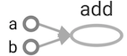
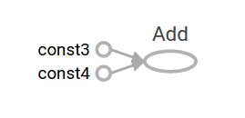
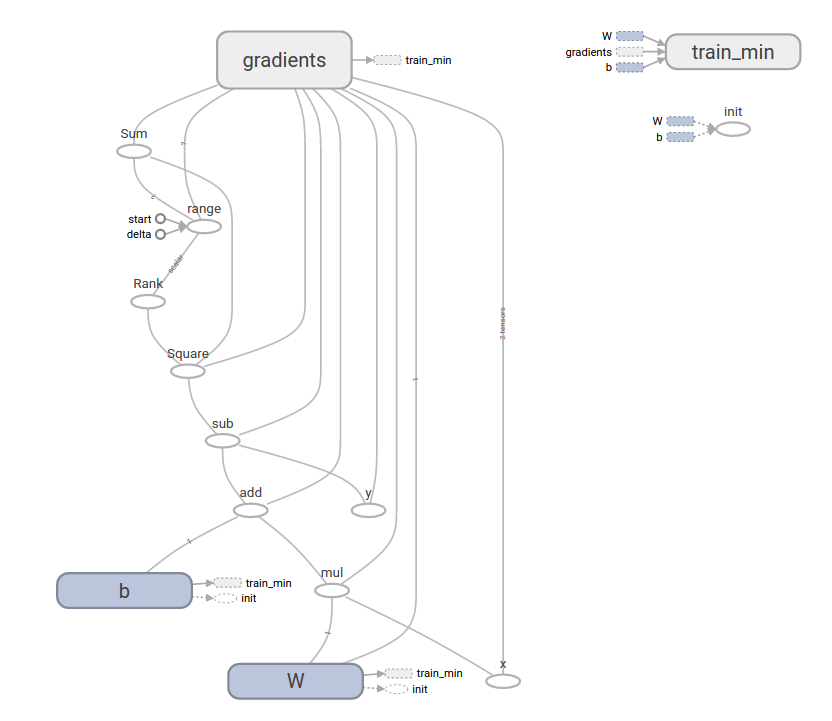
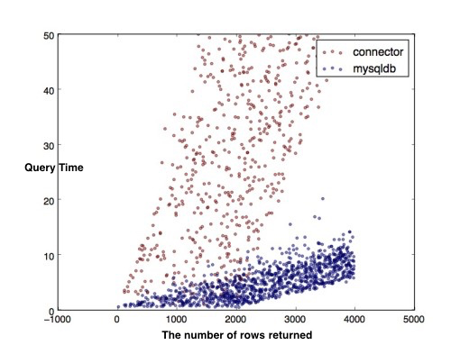
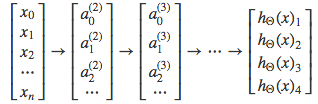
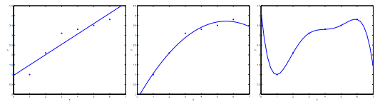

TensorFlow Operation
1 Visualize with TensorBoard
import tensorflow as tf
a = tf.constant(2, name='a')
b = tf.constant(3, name='b')
x = tf.add(a, b, name='add')
with tf.Session() as sess:
writer = tf.summary.FileWriter('./graphs', sess.graph)
print(sess.run(x))media/15033836099887
writer.close() # close the writer when you're done using it.
5
Bash command (to view TensorBoard):
tensorboard --logdir='./graphs' --port 6006
# open http://localhost:6006/#graphs in your browser
Explicitly name operation, variable
a = tf.constant(2, name='a')
b = tf.constant(3, name='b')
x = tf.add(a,b,name='add')
with tf.Session() as sess:
writer = tf.summary.FileWriter('./graphs', sess.graph)
print(sess.run(x))
writer.close() # close the writer when you're done using it.
5
The figure produced by TensorBoard is as follows:

Note: Learn to use TensorBoard well and often. It will help a lot when you build complicated models.
2 Constant types
Tensors filled with a specific value
Using tensorflow.zeros to fill tensor with zeros, which is similar to Numpy:
tf.zeros(shape, dtype=tf.float32, name=None)
For example,
x = tf.zeros([2,3], tf.int32)
with tf.Session() as sess:
print(sess.run(x))
[[0 0 0]
[0 0 0]]
tensorflow.zeros_like return an tensor of zeros with the same shape and type as a given tensor. For example, we may want to have a tensor filled with zeros, with the same shape as x:
y = tf.zeros_like(x)
with tf.Session() as sess:
print(sess.run(y))
[[0 0 0]
[0 0 0]]
There are other command to fill tensor with a specific value, such as tensorflow.ones, tensorflow.ones_like, which of usage is similar to tensorflow.zeros, tensorflow.zeros_like.
tensorflow.fill creates a tensor filled with a scalar value:
tf.fill(dims, value, name=None)
z = tf.fill([3,4],3)
with tf.Session() as sess:
print(sess.run(z))
[[3 3 3 3]
[3 3 3 3]
[3 3 3 3]]
Constants as sequences
You can create constants that are sequences, using tf.linspace, tf.range:
tf.linspace(start, stop, num, name=None)
# create a sequence of num evenly-spaced values are generated beginning at start. If num > 1, the values in the sequence increase by stop - start / num - 1, so that the last one is exactly stop.
# start, stop, num must be scalars
# comparable to but slightly different from numpy.linspace
# numpy.linspace(start, stop, num=50, endpoint=True, retstep=False, dtype=None)
tf.range(start, limit=None, delta=1, dtype=None, name='range')
# create a sequence of numbers that begins at start and extends by increments of delta up to but not including limit
# slight different from range in Python
x = tf.linspace(10.0, 13.0, 4, name='linspace')
y = tf.range(3, 18)
z= tf.range(3, 18, 3)
with tf.Session() as sess:
print(sess.run(x))
print(sess.run(y))
print(sess.run(z))
[ 10. 11. 12. 13.]
[ 3 4 5 6 7 8 9 10 11 12 13 14 15 16 17]
[ 3 6 9 12 15]
3 Math Operations

a = tf.constant([[3,6],[0,0]])
b = tf.constant([[0,0],[2,2]])
x1 = tf.add(a, b)
x2 = tf.add_n([a,b,b]) # >> [7 10]. Equivalent to a + b + b
x3 = tf.multiply(a, b) # >> [6 12] because mul is element wise
x4 = tf.matmul(a, b) # >> ValueError
x5 = tf.matmul(tf.reshape(a, [4, 1]), tf.reshape(b, [1, 4])) # >> [[18]]
with tf.Session() as sess:
sess.run(a)
sess.run(b)
print('x1:\n', sess.run(x1))
print('x2:\n', sess.run(x2))
print('x3:\n', sess.run(x3))
print('x4:\n', sess.run(x4))
print('x5:\n', sess.run(x5))
x1:
[[3 6]
[2 2]]
x2:
[[3 6]
[4 4]]
x3:
[[0 0]
[0 0]]
x4:
[[12 12]
[ 0 0]]
x5:
[[ 0 0 6 6]
[ 0 0 12 12]
[ 0 0 0 0]
[ 0 0 0 0]]
4 TensorFlow data types:
Python Native Types
TensorFlow takes Python natives types: boolean, numeric (int, float), strings
TensorFlow takes in Python native types such as Python boolean values, numeric values (integers, floats), and strings. Single values will be converted to 0-d tensors (or scalars), lists of values will be converted to 1-d tensors (vectors), lists of lists of values will be converted to 2-d tensors (matrices), and so on.
tf.InteractiveSession() # open tensorflow interactivesession
t_0 = 19 # Treated as a 0-d tensor, or "scalar"
print('t_0:',t_0)
print(tf.zeros_like(t_0)) # ==> 0
print(tf.ones_like(t_0)) # ==> 1
t_1 = [b"apple" , b"peach" , b"grape"] # treated as a 1-d tensor, or "vector"
print('t_1:',t_1)
print(tf.zeros_like(t_1)) # ==> ['' '' '']
t_2= [[ True, False, False], [False, False, True], [False, True , False ]] # treated as a 2-d tensor, or "matrix"
print('t_2:',t_2)
print(tf.zeros_like(t_2)) # ==> 2x2 tensor, all elements are False
print(tf.ones_like(t_2)) # ==> 2x2 tensor, all elements are True
t_0: 19
Tensor("zeros_like_32:0", shape=(), dtype=int32)
Tensor("ones_like_20:0", shape=(), dtype=int32)
t_1: [b'apple', b'peach', b'grape']
Tensor("zeros_like_33:0", shape=(3,), dtype=string)
t_2: [[True, False, False], [False, False, True], [False, True, False]]
Tensor("zeros_like_34:0", shape=(3, 3), dtype=bool)
Tensor("ones_like_21:0", shape=(3, 3), dtype=bool)
Note: Do not use Python native types for tensors because TensorFlow has to infer Python type.
TensorFlow Native Types
Like NumPy, TensorFlow also its own data types such as tf.int32, tf.float32. Below is a list of current TensorFlow data types.

Numpy Data Types
By now, you’ve probably noticed the similarity between NumPy and TensorFlow. TensorFlow was designed to integrate seamlessly with Numpy, the package that has become the lingua franca of data science.
TensorFlow’s data types are based on those of NumPy; in fact, np.int32 == tf.int32 returns True. You can pass NumPy types to TensorFlow ops.
Example:
import numpy as np
tf.ones([2, 2], np.float32)
<tf.Tensor 'ones:0' shape=(2, 2) dtype=float32>
x = np.zeros((2,2))
tf.ones_like(x)
<tf.Tensor 'ones_like_22:0' shape=(2, 2) dtype=float64>
Constant
Constants are stored in the graph definition. This makes loading graphs expensive when constants are big. Only use constants for primitive types, use variables or readers for more data that requires more memory.
g = tf.Graph() # to add operators to a graph, set it as default:
with g.as_default():
my_const = tf.constant([1.0, 2.0], name="my_const")
with tf.Session() as sess:
print(sess.graph.as_graph_def())
node {
name: "my_const"
op: "Const"
attr {
key: "dtype"
value {
type: DT_FLOAT
}
}
attr {
key: "value"
value {
tensor {
dtype: DT_FLOAT
tensor_shape {
dim {
size: 2
}
}
tensor_content: "\000\000\200?\000\000\000@"
}
}
}
}
versions {
producer: 24
}
Variables
tf.constant is an operation, but tf.Variable is a class. tf.Variables holds several operations:
tf.InteractiveSession()
xx = tf.Variable(23, name='scalar')
xx.initializer # init op
xx.value() # read op
assign_op = xx.assign(5)
You have to initialize variables, The easiest way is initializing all variables at once:
init = tf.global_variables_initializer()
with tf.Session() as sess:
sess.run(init)
print(xx.eval())
sess.run(assign_op)
print(xx.eval())
23
5
Each session maintains its own copy of variable
W = tf.Variable(10, name='W')
sess1 = tf.Session()
sess2 = tf.Session()
sess1.run(W.initializer)
sess2.run(W.initializer)
print(sess1.run(W.assign_add(10)))
print(sess2.run(W.assign_sub(2))) # not 18!
sess1.close()
sess2.close()
20
8
Use a variable to initialize another variables
# want to declare U = 2*W
# W is random tensor
W = tf.Variable(tf.truncated_normal([4, 2]))
U = tf.Variable(2*W.initialized_value())
with tf.Session() as sess:
sess.run(U.initializer)
print(U.eval())
[[ 1.11442947 -3.1675539 ]
[ 3.02267933 -0.81786388]
[ 2.57613969 -0.98440802]
[ 0.6298722 -0.38194153]]
Session vs InteractiveSession,
You sometimes see InteractiveSession instead of Session. The only difference is an InteractiveSession makes itself the default.
sess = tf.InteractiveSession()
a = tf.constant(5.0)
b = tf.constant(6.0)
c = a*b
# We can just use `c.eval()` with out specifying the context `sess`
print(c.eval())
sess.close()
30.0
Placeholder
A TensorFlow program often has 2 phases:
- Assemble a graph
- Use a session to execute operations in the graph
\(\rightarrow\) can assemble the graph without knowing the values needed for computation
Analogy: Can define the function \(f(x,y) = x*2+y\) without knowing value of \(x\) or \(y\).
So using placeholders, we can later supply their data when they needed to execute the computation.
tf.placeholder(dtype, shape=None, name=None)
shape=None means that tensor of nay shape will be accepted as value for placeholder. Note: shape=None is easy to construct graphs, but nightmarish for debugging.
To make shape flexible, None can be used in the shape argument:
X = tf.placeholder(dtype=tf.float32, shape=[n_x, None], name='X')
Lazy loading
Lazy loading means defer creating/initializing an object until it is needed.
Normal loading:
g = tf.Graph()
with g.as_default():
x = tf.Variable(10, name='x')
y = tf.Variable(20, name='y')
z = tf.add(x,y) # you create the node for add node before executing the graph
with tf.Session() as sess:
sess.run(tf.global_variables_initializer())
for _ in range(10):
sess.run(z)
Lazy loading:
g = tf.Graph()
with g.as_default():
x = tf.Variable(10, name='x')
y = tf.Variable(20, name='y')
with tf.Session() as sess:
sess.run(tf.global_variables_initializer())
writer = tf.summary.FileWriter('./my_graph/12', sess.graph)
for _ in range(10):
sess.run(tf.add(x,y)) # someone decides to be clever to save one line of code
writer.close()
Note: In Lazy loading, Node ADD added 10 times to the graph definition. Image you want to compute an operations thousands of times, you graph gets bloated slow to load, and expensive to pass around.
Solution:
- Separate definition of ops from computing/running ops
- Use Python property to ensure function is also loaded once the first time it is called.
Getting started with TensorFlow
TensorFlow Core tutorial
importing TensorFlow
import tensorflow as tf
The Computational Graph
A computational graph is a series of TensorFlow operations arranged into a graph of nodes. Let's build a simple computational graph. Each node takes zero or more tensors as inputs and produces a tensor as an output. One type of node is a constant. Like all TensorFlow constant, it takes no inputs, and it outputs a value it stores internally. We can create two floating point Tensor node1 and node2 as follows:
node1 = tf.constant(3.0, dtype=tf.float32)
node2 = tf.constant(4.0) # also tf.float32 implicitly
print(node1, node2)
Tensor("Const:0", shape=(), dtype=float32)
Tensor("Const_1:0", shape=(), dtype=float32)
To produce output values for node1 and nodes2, evaluation is needed. To actually evaluate the nodes, we must run the computational graph within a session. A session encapsulates the control and state of the Tensorflow runtime.
The following code creates a Session object and then invokes its run method to run enough of the computational graph to evaluate node1 and node2. By running the computational graph in a session as follows:
sess = tf.Session()
print(sess.run([node1, node2]))
[3.0, 4.0]
We can build more complicated computations by combining Tensor nodes with operations(Operations are also nodes). For example, we can add our two constant nodes and produce a new graph as follows:
node3 = tf.add(node1, node2)
print('node3:', node3)
print('sess.run(node3):', sess.run(node3))
node3: Tensor("Add:0", shape=(), dtype=float32)
sess.run(node3): 7.0
TensorFlow provides a utility called TensorBoard that can display a picture of the computational graph. Here is a screenshot showing how TensorBoard visualizes the graph:

As it stands, this graph is not especially interesting because it always produces a constant result. A graph can be parameterized to accept external inputs, known as placeholders. A placeholder is a promise to provide a value later.
a = tf.placeholder(tf.float32)
b = tf.placeholder(tf.float32)
adder_node = a + b # + provides a shortcut for tf.add(a,b)
The preceding three lines are a bit like a function or a lambda in which we define two input parameters (a and b) and then an operation on them. We can evaluate this graph with multiple inputs by using the feed_dict argument to the run method to feed concrete values to the placeholder:
print(sess.run(adder_node, {a:3, b:4.5}))
print(sess.run(adder_node, {a:[1,3], b:[2,4]}))
7.5
[ 3. 7.]
In TensorBoard, the graph looks like this:

We can make the computational graph more complex by adding another operation. For example,
add_and_triple = adder_node * 3.
print(sess.run(add_and_triple,{a:3, b:4.5}))
22.5
The preceding computational graph would look as follows in TensorBoard:

In machine learning we will typically want a model that can take arbitrary inputs, such as the one above. To make the model trainable, we need to be able to modify the graph to get new outputs with the same input. variables allow us to add trainable parameters to a graph. They are constructed with a type and initial value:
W = tf.Variable([.3], dtype=tf.float32)
b = tf.Variable([-.3], dtype=tf.float32)
x = tf.placeholder(tf.float32)
linear_model = W*x +b
Constants are initialized when you call tf.constant, and their value can never change. By contrast, variables are not initialized when you call tf.Variable. To initialize all the variables in a TensorFlow program, you must explicitly call a special operation as follows:
init = tf.global_variables_initializer()
sess.run(init)
It is important to realize init is a handle to the TensorFlow sub-graph that initializes all the global variables. Until we call sess.run, the variables are uninitialized.
Since x is a placeholder, we can evaluate linear_model for several values of x simultaneously as follows:
print(sess.run(linear_model,{x:[1,2,3,4]}))
[ 0. 0.30000001 0.60000002 0.90000004]
We've create a model, but we don't know how good it is yet. To evaluate the model on training data, we need a y placeholder to provide the desired values, and we need to write a loss function.
A loss function measures how far apart the current model is from the provided data. We'll use a standard loss model for linear regression, which sums the squares of the deltas between the current model and the provided data. linear_model -y creates a vector where each element is the corresponding example's error delta. We call tf.square to square that error. Then, we sum all the squared errors to create a single scalar that abstacts the error of all examples using tf.reduce_sum:
y = tf.placeholder(tf.float32)
squared_deltas = tf.square(linear_model - y)
loss = tf.reduce_sum(squared_deltas)
print(sess.run(loss, {x:[1,2,3,4], y:[0,-1,-2,-3]}))
23.66
We could improve this manually by reassigning the values of W and b to the perfect values of -1 and 1. A variable is initialized to the value provided to tf.Variable but can be changed using operations like tf.assign. FOr example, W=-1 and b=1 are the optimal parameters for our model. We can change W and b accordingly:
fixW = tf.assign(W, [-1.])
fixb = tf.assign(b, [1.])
sess.run([fixW, fixb])
print(sess.run(loss, {x:[1,2,3,4], y:[0,-1,-2,-3]}))
0.0
We guessed the "perfect" values of W and b, but the whole point of machine learning is to find the correct model parameters automatically. We will show how to accomplish this in the next section.
tf.train API
A complete discussion of machine learning is out of the scope of this tutorial. However, TensorFlow provides optimizers that slowly change each variable in order to minimize the loss function. The simplest optimizer is gradient descent. It modifies each variable according to the magnitude of the derivative of loss with respect to that variable. In general, computing symbolic derivatives manually is tedious and error-prone. Consequently, TensorFlow can automatically produce derivatives given only a description of the model using the function tf.gradients. For simplicity, optimizers typically do this for you. For example,
optimizer = tf.train.GradientDescentOptimizer(0.01)
train = optimizer.minimize(loss)
sess.run(init) # reset values to incorrect defaults
for i in range(1000):
sess.run(train, {x:[1,2,3,4], y:[0,-1,-2,-3]})
print(sess.run([W,b]))
[array([-0.9999969], dtype=float32), array([ 0.99999082], dtype=float32)]
Now we have done actual machine learning! Although doing this simple linear regression doesn't require much TensorFlow core code, more complicated models and methods to feed data into your model necessitate more code. Thus TensorFlow provides higher level abstractions for common patterns, structures, and functionality. We will learn how to use some of these abstractions in the next section.
Complete program
import tensorflow as tf
# Model parameters
W = tf.Variable([.3], dtype=tf.float32)
b = tf.Variable([-.3], dtype=tf.float32)
# Model input and output
x = tf.placeholder(tf.float32)
linear_model = W * x + b
y = tf.placeholder(tf.float32)
# loss
loss = tf.reduce_sum(tf.square(linear_model - y)) # sum of the squares
# optimizer
optimizer = tf.train.GradientDescentOptimizer(0.01)
train = optimizer.minimize(loss)
# training data
x_train = [1, 2, 3, 4]
y_train = [0, -1, -2, -3]
# training loop
init = tf.global_variables_initializer()
sess = tf.Session()
sess.run(init) # reset values to wrong
for i in range(1000):
sess.run(train, {x: x_train, y: y_train})
# evaluate training accuracy
curr_W, curr_b, curr_loss = sess.run([W, b, loss], {x: x_train, y: y_train})
print("W: %s b: %s loss: %s"%(curr_W, curr_b, curr_loss))
W: [-0.9999969] b: [ 0.99999082] loss: 5.69997e-11
This more complicated program can still be visualized in TensorBoard:

tf.estimator
tf.estimator is a high-level TensorFlow library that simplifies the mechanics of machine learning, including the following:
- running training loops
- running evaluation loops
- managing data sets
tf.estimatordefines many common models.
Basic usage
Notice how much simpler the linear regression program becomes with tf.estimator:
# NumPy is often used to load, manipulate and preprocess data.
import numpy as np
# Declare list of features. We only have one numeric feature. There are many
# other types of columns that are more complicated and useful.
feature_columns = [tf.feature_column.numeric_column("x", shape=[1])]
# An estimator is the front end to invoke training (fitting) and evaluation
# (inference). There are many predefined types like linear regression,
# linear classification, and many neural network classifiers and regressors.
# The following code provides an estimator that does linear regression.
estimator = tf.estimator.LinearRegressor(feature_columns=feature_columns)
# TensorFlow provides many helper methods to read and set up data sets.
# Here we use two data sets: one for training and one for evaluation
# We have to tell the function how many batches
# of data (num_epochs) we want and how big each batch should be.
x_train = np.array([1., 2., 3., 4.])
y_train = np.array([0., -1., -2., -3.])
x_eval = np.array([2., 5., 8., 1.])
y_eval = np.array([-1.01, -4.1, -7, 0.])
input_fn = tf.estimator.inputs.numpy_input_fn(
{"x": x_train}, y_train, batch_size=4, num_epochs=None, shuffle=True)
train_input_fn = tf.estimator.inputs.numpy_input_fn(
{"x": x_train}, y_train, batch_size=4, num_epochs=1000, shuffle=False)
eval_input_fn = tf.estimator.inputs.numpy_input_fn(
{"x": x_eval}, y_eval, batch_size=4, num_epochs=1000, shuffle=False)
# We can invoke 1000 training steps by invoking the method and passing the
# training data set.
estimator.train(input_fn=input_fn, steps=1000)
# Here we evaluate how well our model did.
train_metrics = estimator.evaluate(input_fn=train_input_fn)
eval_metrics = estimator.evaluate(input_fn=eval_input_fn)
print("train metrics: %r"% train_metrics)
print("eval metrics: %r"% eval_metrics)
INFO:tensorflow:Using default config.
WARNING:tensorflow:Using temporary folder as model directory: /var/folders/66/y1hc77j572v71r0gm2r39rfr0000gn/T/tmp2rnith_a
INFO:tensorflow:Using config: {'_model_dir': '/var/folders/66/y1hc77j572v71r0gm2r39rfr0000gn/T/tmp2rnith_a', '_tf_random_seed': 1, '_save_summary_steps': 100, '_save_checkpoints_secs': 600, '_save_checkpoints_steps': None, '_session_config': None, '_keep_checkpoint_max': 5, '_keep_checkpoint_every_n_hours': 10000, '_log_step_count_steps': 100}
INFO:tensorflow:Create CheckpointSaverHook.
INFO:tensorflow:Saving checkpoints for 1 into /var/folders/66/y1hc77j572v71r0gm2r39rfr0000gn/T/tmp2rnith_a/model.ckpt.
INFO:tensorflow:loss = 19.0, step = 1
INFO:tensorflow:global_step/sec: 592.325
INFO:tensorflow:loss = 0.192443, step = 101 (0.171 sec)
INFO:tensorflow:global_step/sec: 710.314
INFO:tensorflow:loss = 0.0370785, step = 201 (0.141 sec)
INFO:tensorflow:global_step/sec: 669.791
INFO:tensorflow:loss = 0.0173565, step = 301 (0.150 sec)
INFO:tensorflow:global_step/sec: 729.609
INFO:tensorflow:loss = 0.00361388, step = 401 (0.136 sec)
INFO:tensorflow:global_step/sec: 814
INFO:tensorflow:loss = 0.000215951, step = 501 (0.123 sec)
INFO:tensorflow:global_step/sec: 793.172
INFO:tensorflow:loss = 0.0001734, step = 601 (0.127 sec)
INFO:tensorflow:global_step/sec: 776.415
INFO:tensorflow:loss = 3.66416e-05, step = 701 (0.128 sec)
INFO:tensorflow:global_step/sec: 845.781
INFO:tensorflow:loss = 3.03422e-06, step = 801 (0.118 sec)
INFO:tensorflow:global_step/sec: 849.689
INFO:tensorflow:loss = 1.18453e-06, step = 901 (0.118 sec)
INFO:tensorflow:Saving checkpoints for 1000 into /var/folders/66/y1hc77j572v71r0gm2r39rfr0000gn/T/tmp2rnith_a/model.ckpt.
INFO:tensorflow:Loss for final step: 3.72255e-07.
INFO:tensorflow:Starting evaluation at 2017-08-21-05:57:38
INFO:tensorflow:Restoring parameters from /var/folders/66/y1hc77j572v71r0gm2r39rfr0000gn/T/tmp2rnith_a/model.ckpt-1000
INFO:tensorflow:Finished evaluation at 2017-08-21-05:57:40
INFO:tensorflow:Saving dict for global step 1000: average_loss = 6.05797e-08, global_step = 1000, loss = 2.42319e-07
INFO:tensorflow:Starting evaluation at 2017-08-21-05:57:40
INFO:tensorflow:Restoring parameters from /var/folders/66/y1hc77j572v71r0gm2r39rfr0000gn/T/tmp2rnith_a/model.ckpt-1000
INFO:tensorflow:Finished evaluation at 2017-08-21-05:57:42
INFO:tensorflow:Saving dict for global step 1000: average_loss = 0.00254753, global_step = 1000, loss = 0.0101901
train metrics: {'average_loss': 6.057968e-08, 'loss': 2.4231872e-07, 'global_step': 1000}
eval metrics: {'average_loss': 0.0025475256, 'loss': 0.010190102, 'global_step': 1000}
What is a tensorflow session?
by Danijar Hafner, modified by larry
I’ve seen a lot of confusion over the rules of tf.Graph and tf.Session in TensorFlow. It’s simple:
- A
graphdefines the computation. It doesn’t compute anything, it doesn’t hold any values, it just defines the operations that you specified in your code. - A
sessionallows you to execute graphs or part of graphs. It allocates resources (on one or more machines) for that and holds the actual values of intermediate results and variables.
Let’s look at an example.
Defining the Graph
We define a graph with a variable and three operations: x returns the current value of our variable. init assigns the initial value of 42 to that variable. x_assign assigns the new value of 13 to that variable.
import tensorflow as tf
graph = tf.Graph()
with graph.as_default():
x = tf.Variable(42, name='foo')
init = tf.global_variables_initializer()
x_assign = x.assign(13)
On a side note: TensorFlow creates a default graph for you, so we don’t need the first two lines of the code above. The default graph is also what the sessions in the next section use when not manually specifying a graph.
Running Computations in a Session
To run any of the three defined operations, we need to create a session for that graph. The session will also allocate memory to store the current value of the variable.
with tf.Session(graph=graph) as sess:
sess.run(init)
sess.run(x_assign)
print(sess.run(x))
13
As you can see, the value of our variable is only valid within one session. If we try to query the value afterwards in a second session, TensorFlow will raise an error because the variable is not initialized there.
with tf.Session(graph=graph) as sess:
print(sess.run(x))
# Error: Attempting to use uninitialized value foo
Of course, we can use the graph in more than one session, we just have to initialize the variables again. The values in the new session will be completely independent from the first one:
with tf.Session(graph=graph) as sess:
sess.run(init)
print(sess.run(x))
42
Hopefully this short workthrough helped you to better understand tf.Session.
Python GIL
An example
In the following Python program, it seems that the program may reach 100% CPU usuage. In fact, it takes only 50% of CPU resources.
import threading
# 子线程死循环
def test():
while True:
pass
t1 = threading.Thread(target=test)
t1.start()
# 主线程死循环
while True:
pass
Introduction
Python全局解释器锁(Global Interpreter Lock)是用于同步线程的一种机制，它使得任何时刻仅有一个线程在执行。上面例子中虽然两个线程是死循环，而且有两个物理CPU内核，但因为 GIL的限制，两个线程只是做着分时切换，总的CPU占用率还略低于50％。
Note: One thread runs Python, while N others sleep or await I/O
Visualization:
All of those red regions indicate times where the operating system has scheduled a Python thread on one of the cores, but it can't run because the thread on the other core is holding it.


Cooperative Multitasking
When it begins a task, such as network I/O, that is of long or uncertain duration and does not require running any Python code, a thread relinquishes the GIL so another thread can take it and run Python. This polite conduct is called cooperative multitasking(协同式多任务处理), and it allows concurrency; many threads can wait for different events at the same time.
For cooperative multitasking, processes voluntarily yield control periodically or when idle in order to enable multiple applications to be run simultaneously. All programs must cooperate for the entire scheduling scheme to work.
Say that two threads each connect a socket:
def do_connect():
s = socket.socket()
s.connect(('python.org', 80)) # drop the GIL
for i in range(2):
t = threading.Thread(target=do_connect)
t.start()
Only one of these two threads can execute Python at a time, but once the thread has begun connecting, it drops the GIL so the other thread can run. This means that both threads could be waiting for their sockets to connect concurrently, which is a good thing. They can do more work in the same amount of time.
Let's try to open the box and see how a Python thread actually drops the GIL while it waits for a connection to be established, in socketmodule.c:
/* s.connect((host, port)) method */
static PyObject *
sock_connect(PySocketSockObject *s, PyObject *addro)
{
sock_addr_t addrbuf;
int addrlen;
int res;
/* convert (host, port) tuple to C address */
getsockaddrarg(s, addro, SAS2SA(&addrbuf), &addrlen);
Py_BEGIN_ALLOW_THREADS
res = connect(s->sock_fd, addr, addrlen);
Py_END_ALLOW_THREADS
/* error handling and so on .... */
}
The Py_BEGIN_ALLOW_THREADS macro is where the thread drops the GIL; it is defined simply as:
PyThread_release_lock(interpreter_lock);
And of course Py_END_ALLOW_THREADS reacquires the lock. A thread might block at this spot, waiting for another thread to release the lock; once that happens, the waiting thread grabs the GIL back and resumes executing your Python code. In short: While N threads are blocked on network I/O or waiting to reacquire the GIL, one thread can run Python.
Let's contrast cooperative multitasking with the other kind of multitasking.
Preemptive Multitasking
A Python thread can voluntarily release the GIL, but it can also have the GIL seized from it preemptively(Preemptive multitasking, 抢占式多任务处理).
Let's back up and talk about how Python is executed. Your program is run in two stages. First, your Python program is compiled into a simpler binary format called bytecode. Second, the Python interpreter's main loop, a function mellifluously named PyEval_EvalFrameEx(), reads the bytecode and executes the instructions in it one by one.
While the interpreter steps through yourbytecode it periodically drops the GIL, without asking permission of the thread whose code it is executing, so other threads can run:
for (;;) {
if (--ticker < 0) {
ticker = check_interval;
/* Give another thread a chance */
PyThread_release_lock(interpreter_lock);
/* Other threads may run now */
PyThread_acquire_lock(interpreter_lock, 1);
}
bytecode = *next_instr++;
switch (bytecode) {
/* execute the next instruction ... */
}
}
By default the check interval is 1000 bytecodes. All threads run this same code and have the lock taken from them periodically in the same way. In Python 3 the GIL's implementation is more complex, and the check interval is not a fixed number of bytecodes, but 15 milliseconds. For your code, however, these differences are not significant.
解决办法
用multiprocessing替代Thread
利用multiprocessing模块，可以很方便的处理。但进程会增加程序实现时线程间数据通讯和同步的困难。
利用ctypes绕过GIL
ctypes可以让Python 接调用任意的C动态库的导出函数。
from ctypes import *
from threading import Thread
#加载动态库
lib = cdll.LoadLibrary("./libdeadloop.so")
#创建一个子线程，让其执行ｃ语言编写的函数，此函数是一个死循环
t = Thread(target=lib.DeadLoop)
t.start()
#主线程，也调用ｃ语言编写的那个死循环函数
#lib.DeadLoop()
while True:
pass
Reference
Python and MySQL
There are a lot of python driver available for MySQL and two stand out the most. The one, traditionally everybody’s choice, sort of industrial standard MySQLdb. It uses a C module to link to MySQL’s client library. For Python3, use PyMySQL instead, because MySQLdb don't support Python3. Oracle’s mysql-connector on the other hand is pure python so no MySQL libraries and no compilation is necessary.
MySQL Connector/Python
To use Python with MySQL, you can use the MySQL Connector/Python (Download Here). For those with anaconda, just install with conda:
conda install -c anaconda mysql-connector-python
MySQL Connector/Python includes support for:
- Almost all features provided by MySQL Server.
- Converting parameter values back and forth between Python and MySQL data types.
- All MySQL extensions to standard SQL syntax.
import re
import mysql.connector
# establishes the connection to MySQL.
cnx = mysql.connector.connect(user='root', password='8032804254qq',
host='127.0.0.1', database='rookery', port='3306')
# creates a cursor object (cur) to use for executing queries on the database.
cur = cnx.cursor(buffered=True)
# query mysql database for list of user accounts
sql_stmnt = "SELECT DISTINCT User, Host FROM mysql.db "
sql_stmnt += "WHERE Db IN('rookery','birdwatchers') "
sql_stmnt += "ORDER BY User, Host"
cur.execute(sql_stmnt)
# loop through list of user accounts
for user_accounts in cur.fetchall():
user_name = user_accounts[0]
host_address = user_accounts[1]
user_account = user_name.decode('utf-8') + "@" + host_address.decode('utf-8')
# display user account heading
print('User Account:', (user_name, host_address))
print("------------------------------------------")
# query mysql for grants for user account
sql_stmnt = "show grants for " + user_account
cur.execute(sql_stmnt)
# loop through grant entries for user account
for grants in cur.fetchall():
# skip 'usage' entry
if re.search('USAGE', grants[0]):
continue
# extract name of database and table
dbtb = re.search('ON\s(.*)\.+?(.+?)\sTO', grants[0])
db = dbtb.group(1)
tb = dbtb.group(2)
# change wildcard for tables to 'all'
if re.search('\*', tb): tb = "all"
# display database and table name for privileges
print("database: ", db, "table: ", tb)
# extract and display privileges for user account # for database and table
privs = re.search('GRANT\s(.+?)\sON', grants[0])
print('privileges: ', privs.group(1))
cur.close()
cnx.close()
PyMySQL
PyMySQL is to be a drop-in replacement for MySQLdb and work on CPython, PyPy and IronPython.
Installation
$ pip install PyMySQL
Example
import pymysql
# connect to the datacase
connection = pymysql.connect(host='localhost', user='root', password='8032804254qq', db='test')
with connection.cursor() as cursor:
"""
Create Table | CREATE TABLE `books` (
`book_id` int(3) NOT NULL AUTO_INCREMENT,
`title` text DEFAULT NULL,
`status` bit(1) DEFAULT b'0',
PRIMARY KEY (`book_id`)
) ENGINE=MyISAM AUTO_INCREMENT=103 DEFAULT CHARSET=utf8
"""
# create a new record
sql = "INSERT INTO `books` (`title`, `status`) VALUES (%s, %s)"
cursor.execute(sql, ('GRE Reading', 1))
# connection is not autocommit by default. So you must commit to save your changes.
connection.commit()
with connection.cursor() as cursor:
sql = "select `book_id`, `title`, `status` from `books`"
cursor.execute(sql)
# read records
for book in cursor.fetchall():
book = list(book)
book[2] = ord(book[2])
print(book)
Difference? which is better?
MySQLdb is a thin python wrapper around C module which implements API for MySQL database.
MySQL Connectoris a Python module that reimplements the MySQL Database API in Python. It is written in Python and does not have any dependencies except for the Python Standard Library. It is slower, but does not require the C library and so is more portable.
Query Performance
Obviously, MySQLdb has better performance, especially when it comes to large data sets.

Reference
1.The differences between MySQLdb and mysqlconnector
2.Python MySQLdb vs mysql-connector query performance
3. PyMySQL evaluation
Tensorflow Introduction
Tensorflow is an open-source software library for Machine Intelligence.
Install
Using conda tool under Anaconda to install tensorflow is a very convenient and direct way.
TensorFlow Python docset
Build TensorFlow Python docset is complex, many dependent utilities and procedures are needed. Fortunately, a feed for TensorFlow Python docset has been built for us.
Add feed below to Dash/Zeal, and install docset. (Project site)
https://raw.githubusercontent.com/ppwwyyxx/dash-docset-tensorflow/master/TensorFlow.xml
Basics
Graph and Operation
A data flow graph representing a TensorFlow computation. It can be viewed via TensorBoard.
An Operation is a node in a TensorFlow Graph that takes zero or more Tensor object as input, and produces zero or more Tensor objects as output.
For example c = tf.matmul(a, b) creates an Operation of type MatMul that takes tensors \(a\) and \(b\) as input, and produces \(c\) as output.
Session
If you are not using an InteractiveSession, then you should build the entire computation graph before starting a session and launching the graph.
Note that there are two typical ways to create and use sessions in tensorflow:
Method 1:
sess = tf.Session()
# Run the variables initialization (if needed), run the operations
result = sess.run(..., feed_dict = {...})
sess.close() # Close the session
Method 2:
with tf.Session() as sess:
# run the variables initialization (if needed), run the operations
result = sess.run(..., feed_dict = {...})
# This takes care of closing the session for you :)
Steps
Writing and running programs in TensorFlow has the following steps:
- Create Tensors (variables) that are not yet executed/evaluated.
- Write operations between those Tensors.
- Initialize your Tensors.
- Create a Session.
- Run the Session. This will run the operations you'd written above.
Learning Resources
Dynamic Programming (1): Introduction
Dynamic programming is a method for solving a complex problem by breaking it down into a collection of simpler subproblems, solving each of those subproblems just once, and storing their solutions. It stores solutions to subproblems instead of recomputing them(called memoization technique).
Dynamic programming v.s. Divide-and-conquer algorithm
Divide-and-conquer algorithms partition the problem into disjoint subproblems, solve the subproblems recursively, and then combine their solutions to solve the original problem. In contrast, dynamic programming partition the problem into subproblems that overlaps, that is, subproblems share subproblems.
Approach
There are usually two equivalent ways to implement a dynamic-programming approach.
Top-down with memoization
We write the procedure recursively in a natural manner, but modified to save the result of each subproblem in the hash table. The procedure first checks to see whether it has previously solved this subproblem. If so, it returns the saved value, saving further computation at this level; if not, the procedure computes the value in the usual manner.
Bottom-up method
We sort the subproblems by size and solve them in size order, smallest first. When solving a particular subproblem, we have already solved all of the smaller subproblems its solution depends upon, and we have saved their solutions. We solve each subproblem only once, and when we first see it, we have already solved all of its prerequisite subproblems.
****## Which Method?
- Top-down approach often results in slightly simpler and clearer code
- Top-down approach only computes the partial results that are needed for the particular problem instance, whereas the bottom-up approach computes all partial results even if some of them go unused.
Greedy Algorithm(3): Huffman Coding
A Huffman code is a particular type of optimal prefix code that is commonly used for lossless data compression. The process of finding and/or using such a code proceeds by means of Huffman coding, an algorithm developed by David A. Huffman.
Concepts and Background
variable-length code
A variable-length code , which contrasts with fixed-length code, can do considerably better than a fixed-length code, by giving frequent characters short codewords and infrequent characters long codewords.
prefix code
prefix code are codes in which no codeword is a prefix of some other codeword. Prefix codes are desirable because they simplify decoding. Since no codeword is a prefix of any other, the codeword that begins an encoded file is unambiguous.
full binary tree
An optimal code for a file is always represented by a full binary tree, in which every non-leaf node has two children.
cost of tree
Given a full binary tree corresponding to a prefix code, we can easily compute the number of bits required to encode a file. For each character \(c\), let the attribute \(c.freq\) denote the frequency of \(c\) in the file and let \(d_T(c)\) denotes the depth of \(c\)'s leaf in the tree. Note that \(d_T(c)\) is also the length of the codeword for character \(c\). The number of bits required to encode a file is thus the cost of the tree \(T\) is
\[B(T) = \sum_{c\in C}c.freq \cdot d_T(c)\]
Problem Statement
Given: A set of symbols and their probabilities.
Return: A prefix-free binary code (a set of codewords) with minimum expected codeword length (equivalently, a tree with minimum weighted path length from the root).
Idea
The idea is to assign variable-length codes to input characters, lengths of the assigned codes are based on the frequencies of corresponding characters. The most frequent character gets the smallest code and the least frequent character gets the largest code.
Implementation
There are mainly two major parts in Huffman Coding
- Build a Huffman Tree from input characters.
- Traverse the Huffman Tree and assign codes to characters.
from queue import PriorityQueue
class HuffmanNode:
def __init__(self, left, right):
self.left_child = left
self.right_child = right
def huffman_coding(freqs):
pq = PriorityQueue()
for value in freqs:
pq.put(value)
while pq.qsize() > 1:
l, r = pq.get(), pq.get()
node = HuffmanNode(l, r)
pq.put((l[0]+r[0], node))
return pq.get()
def walk_tree(node, prefix="", code={}):
if isinstance(node[1], HuffmanNode):
walk_tree(node[1].left_child, prefix + "0", code)
walk_tree(node[1].right_child, prefix + "1", code)
else:
code[node[1]] = prefix
return code
freq = [ (8.167, 'a'), (1.492, 'b'), (2.782, 'c'), (4.253, 'd'),
(12.702, 'e'), (2.228, 'f'), (2.015, 'g'), (6.094, 'h'),
(6.966, 'i'), (0.153, 'j'), (0.747, 'k'), (4.025, 'l'),
(2.406, 'm'), (6.749, 'n'), (7.507, 'o'), (1.929, 'p'),
(0.095, 'q'), (5.987, 'r'), (6.327, 's'), (9.056, 't'),
(2.758, 'u'), (1.037, 'v'), (2.365, 'w'), (0.150, 'x'),
(1.974, 'y'), (0.074, 'z')]
root_node = huffman_coding(freq)
code = walk_tree(root_node)
for i in sorted(freq, reverse=True):
print(i[1], '{:6.2f}'.format(i[0]), code[i[1]])
e 12.70 100
t 9.06 000
a 8.17 1110
o 7.51 1101
i 6.97 1011
n 6.75 1010
s 6.33 0111
h 6.09 0110
r 5.99 0101
d 4.25 11111
l 4.03 11110
c 2.78 01001
u 2.76 01000
m 2.41 00111
w 2.37 00110
f 2.23 00100
g 2.02 110011
y 1.97 110010
p 1.93 110001
b 1.49 110000
v 1.04 001010
k 0.75 0010111
j 0.15 001011011
x 0.15 001011010
q 0.10 001011001
z 0.07 001011000
Complexity
Time complexity: \(O(n \log n)\) where \(n\) is the number of unique characters.
Reference
Bitwise Operation
There are 6 Bitwise Operators(位操作符) in Python:
x<<y: Returns \(x\) with the bits shifted to the left by y places (and new bits on the right-hand-side are zeros). This is the same as multiplying x by \(2^y\).x>>y: Returns \(x\) with the bits shifted to the right by y places. This is the same as //'ing \(x\) by \(2^y\).x&y(bitwise AND): Each bit of the output is 1 if the corresponding bit of \(x\) AND of \(y\) is 1, otherwise it's 0.x|y(bitwise OR): Each bit of the output is 0 if the corresponding bit of \(x\) AND of \(y\) is 0, otherwise it's 1.~ x( bitwise NOT, or complement): Returns the complement of \(x\) - the number you get by switching each 1 for a 0 and each 0 for a 1. This is the same as \(-x-1\).^(bitwise Exclusive OR): outputs true only when inputs differ (one is 1, the other is 0).
Bitwise Operators operate on numbers, but instead of treating that number as if it were a single value, they treat it as if it were a string of bits, written in two's-complement binary.
The method of complements
The method of complements is a technique used to subtract one number from another using only addition of positive numbers.
Many early computers, use one's complement notation. The IBM 700/7000 series used to use sign/magnitude notation. Almost all subsequent minicomputers and microcomputers use two's complement in the computer industry.
One's complement (反码)
The one's complement of a binary number is defined as the value obtained by inverting all the bits in the binary representation of the number (swapping 0s for 1s and vice versa).
Positive numbers are the same simple, binary system used by two's complement and sign-magnitude. Negative values are the bit complement of the corresponding positive value.
The table below shows all possible values in a 4-bit system, from −7 to +7.
+ −
0 0000 1111 — Note that both +0 and −0 return TRUE when tested for zero
1 0001 1110 — and FALSE when tested for non-zero.
2 0010 1101
3 0011 1100
4 0100 1011
5 0101 1010
6 0110 1001
7 0111 1000
Negative zero is the condition where all bits in a signed word are 1.
1111 1111
Two's complement (补码)
A two's complement number system encodes positive and negative numbers in a binary number representation. The weight of each bit is a power of two, except for the most significant bit(最高有效位), whose weight is the negative of corresponding power of two.
The method to convert a negative integer into a two's complement is implemented as follows:
eg. -3
Start with positive 0000 0011
flip bits 1111 1100
add one 1111 1101
Implementation
The naive implementation of Two's complement in Python is as follows:
def int_to_two_complement(val, num_bits):
if val < 0:
# major procedure as follows:
# 1. take the absolute
# 2. flip
# 3. add one
# absolute of val: use int to transform str to int
val = bin(val)[3:].rjust(num_bits, '0')
# flip it: bitwise complement
flip_val = ''
flip_bit = {'0': '1', '1': '0'}
for bit in val:
flip_val += flip_bit[bit]
val = flip_val
# add one
val = list(val)
if val[-1] == '0':
val[-1] = '1'
else:
index = -1
while val[index] == '1':
index -= 1
val[-1] = '0'
val[index - 1] = '1'
val = ''.join(val)
val = int(val)
else:
# fill zeros before the binary number converted by bin, the result = bin(val)
val = bin(val)[2:].rjust(num_bits, '0')
return val
One or Two
A two's complement integer equals its one's complement integer plus one.
\[X_{two} = 2^n-x = x_{one}+1\]
Reference
1.Most Significant Bit
2.wiki-python
3.two's complement in python -Stackoverflow
4. Two's complement WIKIPEDIA
Minimum Spanning Tree: Prim's, Kruskal's Algorithm and Clustering
Let \(G=(V, E)\) be a connected, undirected graph with a real-valued weight function \(w\) defined on \(E\). If an acyclic subset \(T\in E\) that connects all of the vertices and whose total weight \(w(T)=\sum_{(u,v)\in T}w(u,v)\) is minimized, \(T\) forms a Minimum Spanning Tree.
Concepts
safe edge: An edge that may be added to \(A\) without violating the invariant that \(A\) is a subset of someminimum spanning tree.cut: Acut\((S, V-S)\) of an undirected graph \(G=(V,E)\) is a partition of \(V\).cross: We say that an edge \((u,v)\in E\)crossesthe cut \((S,V-S)\) if one of its endpoints is in \(S\) and the other is in \(V-S\).respect: If no edge in \(A\) (a subset of someminimum spanning tree)crossesthe cut, the cutrespectsa set \(A\) of edges.light edge: An edge is alight edgecrossing a cut if its weight is the minimum of any edge crossing the cut.
Prim's algorithm
In Prim's algorithm, each step adds a light edge to minimum spanning tree. The running time of the Prim's algorithm is \(O(E \log(V))\)
Implementation
def prim(agraph, start):
"""
Prim's algorithm for minimum spanning tree
Using min-heap data structure
return a minimum spanning tree
"""
# vertex of minimun spanning tree
mst_vertex = []
pq = PriorityQueue()
for v in agraph:
v.setDistance(sys.maxsize)
v.setPred(None)
start.setDistance(0)
pq.buildHeap([(v.getDistance(), v) for v in agraph])
while not pq.isEmpty():
u = pq.delMin()
mst_vertex.append(u)
for adjacent in u.getConnections():
newcost = u.getWeight(adjacent)
if adjacent in pq and newcost < adjacent.getDistance():
adjacent.setPred(u)
adjacent.setDistance(newcost)
pq.decreaseKey(adjacent, newcost)
# edges of minimum spanning tree
mst = []
for i in range(1, len(mst_vertex)):
# u, v, cost
mst.append((mst_vertex[i-1], mst_vertex[i], mst_vertex[i].getDistance()))
return mst
Prim's v.s. Dijkstra's
Prim's algorithm are similar to Dijkstra's algorithm, both of which use a priority queue. And each of them belongs to greedy algorithm. There is trivial difference when implementing:
\[\text{Prim's} p(v) = \min_{(u,v): u\in S} w(u,v)\]
\[\text{Dijkstra's} s(v) = \min_{(u,v): u\in S} \text{dist(su,u)} w(u,v)\]
Kruskal's Algorithm
In Kruskal's algorithm, always add edges in increasing weight, skipping those whose addition would create a cycle.
In order to keep track of the connected components of a minimum spanning tree when implementing Kruskal's algorithm, a disjoint-set data structure should be used. The pseudo code for MST-KRUSKAL:
mst = []
for each vertex in G:
make-set(vertex)
sort the edges of G into nondecreasing order by weight of edges
for each edge (u,v) in G:
if find-set(u) != find_set(v):
mst = mst + (u,v)
union(u,v)
return mst
If we use union-by-rank and path-compression heuristics in disjoint-set data structure, the running time of Kruskal's algorithm is \(O(E\lg V)\).
Implementation
def kruskal_mst(agraph):
"""
Return a minimum spanning tree using kruskal's algorithm
"""
# minimum spanning tree
mst = []
# disjoint set
disjoint_set = DisjointSet()
# make set
for vertex in agraph.Vertices():
disjoint_set.make_set(vertex)
# edges of the graph
edges = agraph.edges()
edges.sort(key=lambda tup: tup[2])
for u, v, cost in edges:
if disjoint_set.find_set(u) != disjoint_set.find_set(v):
mst.append((u, v, cost))
disjoint_set.union(u, v)
return mst
Clustering
Max-Spacing k clustering: Given a set of objects \(p_1, . . . , p_n\), a distance function \(d(p_i,p_j)\) specifies their similarity. \(d(p_i,p_j)\) may be an actual distance, or some abstract representation of how dissimilar of two things are.
OUR GOAL: Divide the \(n\) items up into \(k\) groups so that the minimum distance between items in different groups is maximized.
IDEA:
- we maintain clusters as a set of connected components of a graph.
- And Iteratively combine the clusters containing the two closest items by adding an edge between them.
- Stop when there are \(k\) clusters.
You'll find this is exactly Kruskal's algorithm.
Implementation
def clustering(agraph, k):
"""
Max-Spacing k clustering
Return maximum spacing of a k-clustering
and corresponding mst.
"""
# minimum spanning tree
mst = []
# disjoint set
disjoint_set = DisjointSet()
# make set
for vertex in agraph.Vertices():
disjoint_set.make_set(vertex)
# edges of the graph
edges = agraph.edges()
edges.sort(key=lambda tup: tup[2])
for u, v, cost in edges:
if len(disjoint_set) >= k:
if disjoint_set.find_set(u) != disjoint_set.find_set(v):
mst.append((u, v, cost))
max_cost = cost
disjoint_set.union(u, v)
else:
break
return max_cost, mst
Disjoint-Set Data Structure
In order to keep track of the connected components of a minimum spanning tree when implementing Kruskal's algorithm, a disjoint-set data structure should be used.
Disjoint-set data structure, also called union-find data structure, is a data structure that keeps track of a set of elements partitioned into a number of disjoint subsets.
A disjoint-set data structure supports following operations:
MAKE-SET(x)creates a new set whose only member is \(x\)UNION(x,y)unites the dynamic sets that contains \(x\) and \(y\), into a new set that is the union of these two sets.FIND-SET(x)returns the representative of the set containing \(x\).
Linked-List Implementation
Each set is represented by its own linked list. The object for each set has attributes head, pointing to the first object in the list, and tail, pointing to the last object. Each object in the linked list contains a set member, a pointer to the next object in the list, and a pointer back to the set object.

Weighted-Union Heuristic: And each linked list also includes the length of the list and we always append the shorter list onto the longer.
Using the linked-list representation of disjoint sets and the weighted-union heuristic, a sequence of \(m\) MAKE-SET, UNION, and FIND-SET, \(n\) of which are MAKE-SET operations, takes \(O(m+n\lg n)\) time.
class Node:
"""
class Node for double liked list
"""
def __init__(self, elem):
self.prev = None
self.elem = elem
self.next = None
def __hash__(self):
return hash(self.elem)
def __eq__(self, x, y):
return x.elem == y.elem
class LinkedList:
def __init__(self):
self.head = None
self.tail = None
self.length = 0
def add(self, node):
"""
add element to disjoint set
"""
if self.head:
node.prev = self
self.tail.next = node
self.tail = node
else:
self.head = node
self.tail = node
node.prev = self
self.length += 1
def __len__(self):
return self.length
def set_length(self, l):
self.length = l
def __iter__(self):
next_node = self.head
while next_node:
yield next_node
next_node = next_node.next
class DisjointSet:
def __init__(self):
self.sets = []
def make_set(self, node):
"""
creates a new set whose only member (and thus representative) is x.
"""
alist = LinkedList()
alist.add(node)
self.sets.append(alist)
return alist
def union(self, nodex, nodey):
"""
unites the dynamic sets that contain x and y, into a new set that is the union of these two sets.
"""
listx = self.find_set(nodex)
listy = self.find_set(nodey)
# append the shorter list onto the longer.
if len(listx) > len(listy):
listx.tail.next = listy.head
for y in listy:
y.prev = listx
listx.tail = listy.tail
listx.set_length = len(listx) + len(listy)
self.sets.remove(listy)
else:
listy.tail.next = listx.head
for x in listx:
x.prev = listy
listy.tail = listx.tail
listy.setlength = len(listx) + len(listy)
self.sets.remove(listx)
def find_set(self, node):
"""
returns the representative of the set containing x
"""
return node.prev
def connected_components(self):
for link_list in self.sets:
print('( ', end='')
for node in link_list:
print(node.elem, end=' ')
print(') ', end='')
def __len__(self):
return len(self.sets)
Forest Implementation of Disjoint-Set
Disjoint-set forest, a faster implementation of disjoint sets, uses rooted trees represent sets, with each node containing one member and each tree representing one set. In a disjoint-set forest, each member points only to its parents. The root of each tree contains the representative and is its own parent.

Union by Rank: For each node, we maintain a rank, which is an upper bound on the hight of the node. We make the root with smaller rank point to the root with larger rank during a Union operation.
Path Compression: When we call find_set, we traverse the path from a node up to its root. Instead of just returning root, we will link all the nodes in this path directly to root.

class DisjointSet:
"""
Disjoint set data structure
"""
def __init__(self):
self.sets = []
self.parent = {}
self.rank = {}
def make_set(self, node):
"""
creates a new set whose only member (and thus representative) is x.
"""
self.parent[node] = node
self.sets.append(node)
self.rank[node] = 0
def union(self, x, y):
"""
unites the dynamic sets that contain x and y, into a new set that is the union of these two sets.
"""
x_root = self.find_set(x)
y_root = self.find_set(y)
if x_root == y_root:
return
if self.rank[x_root] > self.rank[y_root]:
self.parent[y_root] = x_root
else:
self.parent[x_root] = y_root
if self.rank[x_root] == self.rank[y_root]:
self.rank[y_root] = self.rank[y_root] + 1
def find_set(self, x):
"""
returns the representative of the set containing x
"""
if self.parent[x] != x:
self.parent[x] = self.find_set(self.parent[x])
return self.parent[x]
Reference
- Cormen, Leiserson, Rivest, and Stein. 2009. Introduction to Algorithms (3rd edition)
- Disjoint-set Data Structure MIT
MySQL(1): Introduction
- client and server
- basic command
- GUI
- auto-completion and syntax highlighting
- Starting to Explore Databases
MySQL is an open source, multithread, relational database management system.
client and server
The server maintains, controls and protects your data, storing it in files on the computer where the server is running in various formats. It listens for requests from client.
For MySQL, mysqld(the d stands for daemon) is the server. mysql is a standard MySQL client. With its text-based interface, a user can log in and execute SQL queries.
basic command
- The
mysql_safescript is the most common way to startmysqld, because this script can restart the daemon if it crashes. - The
mysqlaccesstool creates user accounts and sets their privileges. - The
mysqladminutility can be used to manage the database server itself from the command-line. - The
mysqlshowtool may be used to examine a server’s status, as well as information about databases and tables. - The
mysqldumputility is the most popular one for exporting data and table structures to a plain-text file, known as adumpfile. - The command
mysql -u root -pis usually used to start the clientmysql, after which the passport should be filled. - The command
mysql -u root -p -e "SELECT User,Host FROM mysql.user;"gives a list of username and host combination on the server.
GUI
Sequel Pro is a fast, easy-to-use Mac database management application for working with MySQL databases. see detail in Chinese
WorkBench provides data modeling, SQL development, and comprehensive administration tools for server configuration, user administration, backup, and much more.
Although GUIs are easy-to-use, in the long run they're not useful. The text-based mysql client causes you to think and remember more, and it's not that difficult to use or confusing. And the command-line method of using mysql allows you to interact with the server without much overhead.
``
auto-completion and syntax highlighting
Mycli is a command-line interface which support MariaDB, MySQL with auto-completion and syntax highlighting.

Starting to Explore Databases
For each of SQL statements, we heave to specify the database name. If you will be working mainly in one database, you can set the default database so that you don't have to specify the database each time:
USE database_name
Reference
- Russell T D. 2015. Learning MySQL and MariaDB. O'REILLY.
Greedy algorithm (1): Introduction
Definition
A greedy algorithm always makes the choice that looks best at the moment. That is, it makes a locally optimal choice in the hope that this choice will lead to a globally optimal solution. (Cormen et al., 2009)
Contrast with Divide & Conquer
- Easy to propose multiple greedy algorithms for many problems.
- Easy running time analysis. (Contrast with Master method etc.)
- Hard to establish correctness. (Contrast with straightforward inductive correctness proofs.)
DANGER: Most greedy algorithms are NOT correct. (Even if your intuition says otherwise!)
Examples
The Optimal Caching Algorithm
Theorem: [Bélády's 1960s] Farthest-in-Future is the optimal algorithm that minimizes the number of cache misses.
Bélády's Algorithm:
When \(d_i\) is requested but not in the cache,
evict the cache item that will next be used farthest into the future.
A Scheduling Problem
Assume: Each job has a:
- weight \(w_j\) (“priority”)
- length \(l_j\)
The completion time \(C_j\) of job \(j\) = Sum of job lengths up to and including \(j\).
Goal: Minimize the weighted sum of completion times: \(\min \sum ^n_j= w_jC_j\)
Reference
- Cormen, Leiserson, Rivest, and Stein. 2009. Introduction to Algorithms (3rd edition)
Generator
Any function that contains a yield statement is called a generator.
yield statement
Each time a value is yielded (with yield), the function freezes; that is, it stops its execution at exactly that point and waits to be reawakened.
generator comprehension
Generator comprehension works in the same way as list comprehension, except that a list isn't constructed. Instead, a generator is returned.
>>> h = (i for i in range(10))
>>> h
<generator object <genexpr> at 0x104d76ba0>
>>> list(h)
[0, 1, 2, 3, 4, 5, 6, 7, 8, 9]
When using generator comprehension, if there already exists parentheses, you don't need to add another pair.
>>> sorted(100-i for i in range(10))
[91, 92, 93, 94, 95, 96, 97, 98, 99, 100]
Recursive generator
generators are ideal for complex recursive algorithms that gradually build a result.
A recursive generator could be used to flatten a nested list.
def flatten(nested):
"""
When flatten is called, you have two possibilites: the base case and the recursive case.
In the base case, the function is told to flatten a single element.
In the recursive case, flatten it.
>>> list(flatten([[[1], 2], 3, 4, [5, [6, 7]], 8]))
[1, 2, 3, 4, 5, 6, 7, 8]
>>> list(flatten(['foo', ['bar', ['baz']]]))
['foo', 'bar', 'baz']
"""
try:
try:
nested + ' '
except TypeError:
pass
else:
raise TypeError
for sublist in nested:
for element in flatten(sublist):
yield element
except TypeError:
yield nested
if __name__ == "__main__":
import doctest
doctest.testmod(verbose=True)
An inorder traversal (also postoder traversal and preorder traversal) of a binary search tree might use the recursive generator, detailed code here Binary Search Tree
Generator methods
We may supply generators with values after they have started running, by using a communications channel between the generator and the “outside world,” with the following two end points:
The outside world has access to a method on the generator called
send, which works just likenext, except that it takes a single argument (the “message” to send—an arbitrary object).Inside the suspended generator,
yieldmay now be used as anexpression, rather than astatement. In other words, when the generator is resumed, yield returns a value—the value sent from the outside throughsend. Ifnextwas used,yieldreturnsNone.
Hash Table (4): Universal Hashing
Let \(H\) be a finite collection of hash functions that map a given universe \(U\) of keys into the range \(\{0,1,...,m-1\}\). Such a collection is said to be universal if for each pair of distinct keys \(k,l \in U\), the number of hash function \(h \in H\) for which \(h(k) = h(l)\) is at most \(\frac{|H|}{m}\), i.e.
\[ \forall k,l \in U, k\ne l: \Pr_{h\in H }[h(x)=h(y)]\le \frac{1}{m} \]
Why Universal Hashing?
Some malicious adversary might chooses the keys which all hash to the same slot, yielding an average retrieval time of \(\Theta(n)\). Instead of fixed hash functions, randomly chosen hash functions can yield good performance on average.
Designing a universal class of hash functions
In short, you can generate family of hash functions using following simple equation:
h(x,a,b) = ((ax+b) mod p) mod m
\(x\) is key you want to hash
\(a\) is any number you can choose between \(1\) to \(p-1\) inclusive.
\(b\) is any number you can choose between \(0\) to \(p-1\) inclusive.
\(p\) is a prime number that is greater than max possible value of \(x\)
\(m\) is a max possible value you want for hash code + 1
By selecting different values of \(a\) and \(b\) you can generate many hash codes that are independent of each other.
Implementation
import random
class UniversalHash:
"""
>>> h=UniversalHash()
>>> h[54]="cat"
>>> h[26]="dog"
>>> h[93]="lion"
>>> h[77]="bird"
>>> h[31]="cow"
>>> h[44]="goat"
>>> 54 in h
True
"""
def __init__(self):
self.size = 100
self.slots = [None] * self.size
self.data = [None] * self.size
(self.p, self.a, self.b) = self.generate_hash_constants()
def generate_hash_constants(self):
"""
generate a, b, p for universal hashing
"""
p = self._get_prime() # set p a random prime number
a = random.randint(1, p - 1) # A has a random value between 1 and p - 1.
b = random.randint(1, p - 1) # B has a random value between 1 and p - 1
return p, a, b
def put(self, key, data):
hash_value = self.hash_function(key)
if self.slots[hash_value] is None:
self.slots[hash_value] = key
self.data[hash_value] = data
elif self.slots[hash_value] == key:
self.data[hash_value] = data
else:
# rehash
next_slot = self.rehash(hash_value, len(self.slots))
while self.slots[next_slot] is not None and self.slots[next_slot] != key:
next_slot = self.rehash(hash_value, len(self.slots))
if self.slots[next_slot] is None:
self.slots[next_slot] = key
self.data[hash_value] = data
else:
self.data[hash_value] = data
def hash_function(self, key):
"""
hash_function implements the simple remainder method
"""
return round(self.a * key + self.b) % self.p % self.size
def rehash(self, old_hash, size):
"""
linear probing with a plus 1
"""
return (old_hash+1) % size
def get(self, key):
start_slot = self.hash_function(key)
data = None
stop = False
found = False
position = start_slot
while self.slots[position] is not None and \
not found and not stop:
if self.slots[position] == key:
found = True
data = self.data[position]
else:
position = self.rehash(position, len(self.slots))
if position == start_slot:
stop = True
return data
def _is_prime(self,n):
if n <= 2 or n%2 == 0:
return False
return not any((n%i == 0 for i in range(3, n-1)))
def _get_prime(self, p=0):
"""
get a prime number
"""
if p == 0:
p = random.randint(1000000,10000000)
while not self._is_prime(p):
p += 1
return p
def __getitem__(self, key):
return self.get(key)
def __setitem__(self, key, data):
self.put(key, data)
def __len__(self):
"""
return length
"""
count = 0
for item in self.slots:
if item is not None:
count += 1
return count
def __contains__(self, item):
"""
定义了使用in和not in进行成员测试时类的行为
"""
return self.get(item) is not None
def __iter__(self):
"""
iterator
"""
for item in self.slots:
if item is not None:
yield item
if __name__ == "__main__":
import doctest
doctest.testmod(verbose=True)
Resources
- Hash Functions and Hash Tables
- Cormen, Leiserson, Rivest, and Stein, Introduction to Algorithms (3rd edition)
Python树(三)：Binary Search Tree
A binary search tree is a tree that keys that are less than the parent are found in the left subtree, and keys that are greater than the parent are found in the right subtree.
Let \(x\) be a node in a binary search tree. If \(y\) is a node in the left subtree of \(x\), then \(y.key\le x.key\). If \(y\) is a node in the right subtree of \(x\), then \(y.key\le x.key\).
Implementation
Map()Create a new, empty map.put(key,val)Add a new key-value pair to the map. If the key is already in the map then replace the old value with the new value.get(key)Given a key, return the value stored in the map orNoneotherwise.delDelete the key-value pair from the map using a statement of the formdel map[key].len()Return the number of key-value pairs stored in the map.inReturnTruefor a statement of the formkey in map, if the given key is in the map.
To implement the binary search tree, the method of the nodes and references approached similar to binary tree(Link) The BinarySearchTree class has a reference to the TreeNode that is the root of the binary search tree.
delete method
Once we’ve found the node containing the key we want to delete, there are three cases that we must consider:
- The node to be deleted has no children.
- The node to be deleted has only one child.
- The node to be deleted has two children.
The first case is straightforward. If the current node has no children all we need to do is delete the node and remove the reference to this node in the parent. The code for this case is shown in here.
The second case is only slightly more complicated. If a node has only a single child, then we can simply promote the child to take the place of its parent. The code for this case is shown in the next listing. As you look at this code you will see that there are six cases to consider. Since the cases are symmetric with respect to either having a left or right child we will just discuss the case where the current node has a left child. The decision proceeds as follows:
- If the current node is a left child then we only need to update the parent reference of the left child to point to the parent of the current node, and then update the left child reference of the parent to point to the current node’s left child.
- If the current node is a right child then we only need to update the parent reference of the left child to point to the parent of the current node, and then update the right child reference of the parent to point to the current node’s left child.
- If the current node has no parent, it must be the root. In this case we will just replace the key, payload, leftChild, and rightChild data by calling the
replaceNodeDatamethod on the root.
The third case is the most difficult case to handle. If a node has two children, then it is unlikely that we can simply promote one of them to take the node’s place. We can, however, search the tree for a node that can be used to replace the one scheduled for deletion. What we need is a node that will preserve the binary search tree relationships for both of the existing left and right subtrees. The node that will do this is the node that has the next-largest key in the tree. We call this node the successor, and we will look at a way to find the successor shortly. The successor is guaranteed to have no more than one child, so we know how to remove it using the two cases for deletion that we have already implemented. Once the successor has been removed, we simply put it in the tree in place of the node to be deleted.
successor Method
The code to find the successor is a method of the TreeNode class. This code makes use of the same properties of binary search trees that cause an inorder traversal to print out the nodes in the tree from smallest to largest. There are three cases to consider when looking for the successor:
- If the node has a right child, then the successor is the smallest key in the right subtree.
- If the node has no right child and is the left child of its parent, then the parent is the successor.
- If the node is the right child of its parent, and itself has no right child, then the successor to this node is the successor of its parent, excluding this node.
class BinarySearchTree(object):
def __init__(self):
self.root = None
self.size = 0
def put(self, key, val):
if self.root:
self._put(key, val, self.root)
else:
self.root = TreeNode(key, val)
self.size = self.size + 1
def _put(self, key, val, currentNode):
if key < currentNode.key:
if currentNode.hasLeftChild():
self._put(key, val, currentNode.leftChild)
else:
currentNode.leftChild = TreeNode(key, val, parent=currentNode)
else:
if currentNode.hasRightChild():
self._put(key, val, currentNode.rightChild)
else:
currentNode.rightChild = TreeNode(key, val, parent=currentNode)
def __setitem__(self, k, v):
self.put(k, v)
def get(self, key):
if self.root:
res = self._get(key, self.root)
if res:
return res.payload
else:
return None
else:
return None
def _get(self, key, currentNode):
if not currentNode:
return None
elif currentNode.key == key:
return currentNode
elif key < currentNode.key:
return self._get(key, currentNode.leftChild)
else:
return self._get(key, currentNode.rightChild)
def __getitem__(self, key):
res = self.get(key)
if res:
return res
else:
raise KeyError('Error, key not in tree')
def __contains__(self, key):
if self._get(key, self.root):
return True
else:
return False
def length(self):
return self.size
def __len__(self):
return self.size
def __iter__(self):
return self.root.__iter__()
def delete(self, key):
if self.size > 1:
nodeToRemove = self._get(key, self.root)
if nodeToRemove:
self.remove(nodeToRemove)
self.size = self.size - 1
else:
raise KeyError('Error, key not in tree')
elif self.size == 1 and self.root.key == key:
self.root = None
self.size = self.size - 1
else:
raise KeyError('Error, key not in tree')
def __delitem__(self, key):
self.delete(key)
def remove(self, currentNode):
if currentNode.isLeaf(): # leaf
if currentNode == currentNode.parent.leftChild:
currentNode.parent.leftChild = None
else:
currentNode.parent.rightChild = None
elif currentNode.hasBothChildren(): # interior
succ = currentNode.findSuccessor()
succ.spliceOut()
currentNode.key = succ.key
currentNode.payload = succ.payload
else: # this node has one child
if currentNode.hasLeftChild():
if currentNode.isLeftChild():
currentNode.leftChild.parent = currentNode.parent
currentNode.parent.leftChild = currentNode.leftChild
elif currentNode.isRightChild():
currentNode.leftChild.parent = currentNode.parent
currentNode.parent.rightChild = currentNode.leftChild
else:
currentNode.replaceNodeData(currentNode.leftChild.key,
currentNode.leftChild.payload,
currentNode.leftChild.leftChild,
currentNode.leftChild.rightChild)
else:
if currentNode.isLeftChild():
currentNode.rightChild.parent = currentNode.parent
currentNode.parent.leftChild = currentNode.rightChild
elif currentNode.isRightChild():
currentNode.rightChild.parent = currentNode.parent
currentNode.parent.rightChild = currentNode.rightChild
else:
currentNode.replaceNodeData(currentNode.rightChild.key,
currentNode.rightChild.payload,
currentNode.rightChild.leftChild,
currentNode.rightChild.rightChild)
def inorder(self):
self._inorder(self.root)
def _inorder(self, tree):
if tree != None:
self._inorder(tree.leftChild)
print(tree.key)
self._inorder(tree.rightChild)
def postorder(self):
self._postorder(self.root)
def _postorder(self, tree):
if tree:
self._postorder(tree.rightChild)
self._postorder(tree.leftChild)
print(tree.key)
def preorder(self):
self._preorder(self, self.root)
def _preorder(self, tree):
if tree:
print(tree.key)
self._preorder(tree.leftChild)
self._preorder(tree.rightChild)
class TreeNode:
def __init__(self, key, val, left=None, right=None, parent=None):
self.key = key
self.payload = val
self.leftChild = left
self.rightChild = right
self.parent = parent
self.balanceFactor = 0
def hasLeftChild(self):
return self.leftChild
def hasRightChild(self):
return self.rightChild
def isLeftChild(self):
return self.parent and self.parent.leftChild == self
def isRightChild(self):
return self.parent and self.parent.rightChild == self
def isRoot(self):
return not self.parent
def isLeaf(self):
return not (self.rightChild or self.leftChild)
def hasAnyChildren(self):
return self.rightChild or self.leftChild
def hasBothChildren(self):
return self.rightChild and self.leftChild
def replaceNodeData(self, key, value, lc, rc):
self.key = key
self.payload = value
self.leftChild = lc
self.rightChild = rc
if self.hasLeftChild():
self.leftChild.parent = self
if self.hasRightChild():
self.rightChild.parent = self
def findSuccessor(self):
succ = None
if self.hasRightChild():
succ = self.rightChild.findMin()
else:
if self.parent:
if self.isLeftChild():
succ = self.parent
else:
self.parent.rightChild = None
succ = self.parent.findSuccessor()
self.parent.rightChild = self
return succ
def spliceOut(self):
if self.isLeaf():
if self.isLeftChild():
self.parent.leftChild = None
else:
self.parent.rightChild = None
elif self.hasAnyChildren():
if self.hasLeftChild():
if self.isLeftChild():
self.parent.leftChild = self.leftChild
else:
self.parent.rightChild = self.leftChild
self.leftChild.parent = self.parent
else:
if self.isLeftChild():
self.parent.leftChild = self.rightChild
else:
self.parent.rightChild = self.rightChild
self.rightChild.parent = self.parent
def findMin(self):
current = self
while current.hasLeftChild():
current = current.leftChild
return current
def __iter__(self):
"""The standard inorder traversal of a binary tree."""
if self:
if self.hasLeftChild():
for elem in self.leftChild:
yield elem
yield self.key
if self.hasRightChild():
for elem in self.rightChild:
yield elem
Python树(二)：二叉树的实现
树可以具有以下方法：
BinaryTree()creates a new instance of a binary tree.get_left_child()returns the binary tree corresponding to the left child of the current nodeget_right_child()return the binary tree corresponding to the right child of the current nodeset_root_val(val)stores the object stored in the current nodeget_root_val()returns the object stored in the current nodeinsert_left(val)creates a new binary tree and installs it as the left child of the current nodeinsert_right(val)creates a new binary tree and installs it as the right child of the current node
嵌套列表表示树
在列表实现树时，我们将存储根节点作为列表的第一个元素的值。列表的第二个元素的本身是一个表示左子树的列表。这个列表的第三个元素表示在右子树的另一个列表。
# coding: utf-8
def BinaryTree(r):
"""
creates a new instance of a binary tree.
"""
return [r,[],[]]
def get_left_child(root):
"""
returns the binary tree corresponding to the left child of the current node
"""
return root[1]
def get_right_child(root):
"""
return the binary tree corresponding to the right child of the current node
"""
return root[2]
def set_root_val(root, val):
"""stores the object stored in the current node
"""
root[0] = val
def get_root_val(root):
"""
returns the object stored in the current node
"""
return root[0]
def insert_left(root, new_branch):
"""
creates a new binary tree and installs it as the left child of the current node
插入一个左子节点，首先获取对应于当前左子节点的列表（可能是空的）。
然后，添加新的左子节点，将原来的左子节点作为新节点的左子节点。
这使我们能够将新节点插入到树中的任何位置.
"""
if root[1]:
root[1] = [new_branch,root[1], []]
else:
root[1] = [new_branch, [], []]
return root
def insert_right(root, new_branch):
"""
creates a new binary tree and installs it as the right child of the current node
"""
if root[2]:
root[2] = [new_branch, [], root[2]]
else:
root[2] = [new_branch, [], []]
return root
if __name__ == "__main__":
r = BinaryTree(3)
insert_left(r,4)
insert_left(r,5)
insert_right(r,6)
insert_right(r,7)
l = get_left_child(r)
print(l)
set_root_val(l,9)
print(r)
insert_left(l,11)
print(r)
print(get_right_child(get_right_child(r)))
# result
#[5, [4, [], []], []]
#[3, [9, [4, [], []], []], [7, [], [6, [], []]]]
#[3, [9, [11, [4, [], []], []], []], [7, [], [6, [], []]]]
#[6, [], []]
节点和引用
节点和引用方法，定义一个类，具有根、以及左、右子树属性。这种表示更紧密地结合了面向对象的方式。树的结构类似于下图所示。

左右子树是其他二叉树实例的引用。例如，当插入一个新的左子节点到树上时，即创建了二叉树的另一个实例，并修改了根节点的self.left_child使之指向新的树。
import doctest
class BinaryTree(object):
"""
>>> r = BinaryTree('a')
>>> r.get_root_val()
'a'
>>> r.get_left_child()
>>> r.insert_left('b')
>>> r.get_left_child().get_root_val()
'b'
>>> r.insert_right('c')
>>> r.get_right_child().get_root_val()
'c'
>>> r.get_right_child().set_root_val('hello')
>>> r.get_right_child().get_root_val()
'hello'
"""
def __init__(self, root):
self.key = root
self.left_child = None
self.right_child = None
def insert_left(self, item):
"""
creates a new binary tree and installs it as the left child of the current node
"""
if self.left_child:
self.left_child = BinaryTree(item)
else:
t = self.left_child
self.left_child = BinaryTree(item)
self.left_child.left_child = t
def insert_right(self, item):
"""
creates a new binary tree and installs it as the right child of the current node
"""
if self.right_child:
self.right_child = BinaryTree(item)
else:
t = self.right_child
self.right_child = BinaryTree(item)
self.right_child.right_child = t
def get_right_child(self):
"""
return the binary tree corresponding to the right child of the current node
"""
return self.right_child
def get_left_child(self):
"""
return the binary tree corresponding to the left child of the current node
"""
return self.left_child
def set_root_val(self, root):
"""
stores the object stored in the current node
"""
self.key = root
def get_root_val(self):
"""
returns the object stored in the current node
"""
return self.key
def pre_order(self, root):
"""
preorder traversal
"""
print(root.key, end=' ')
if root.left_child:
root.pre_order(root.left_child)
if root.right_child:
root.pre_order(root.right_child)
def post_order(self, root):
"""
postorder traversal
"""
if root is not None:
self.post_order(root.left_child)
self.post_order(root.right_child)
print(root.key, end=' ')
def pre_order(self, root):
"""
Preorder traversal
"""
print(root.key, end=' ')
if root.left_child:
self.pre_order(root.left_child)
if root.right_child:
self.pre_order(root.right_child)
def in_order(self, root):
"""
postorder traversal
"""
if root is not None:
self.in_order(root.left_child)
print(root.key, end=' ')
self.in_order(root.right_child)
if __name__ == "__main__":
doctest.testmod(verbose=True)
优先队列和二叉堆
优先队列(Priority Queues)是一类抽象数据类型。优先队列中的每个元素都有各自的优先级，优先级最高的元素最先得到服务；优先级相同的元素按照其在优先队列中的顺序得到服务。在优先队列的内部，元素的次序是由“优先级”来决定：高优先级的元素排在队首，而低优先级的元素则排在后面。
实现优先队列的经典方法是采用二叉堆(Binary Heap)。因为使用二叉堆能将优先队列的入队和出队复杂度都保持在\(O(\log n)\)。 二叉堆有两种：键值总是最小的排在队首称为最小堆(min heap)，反之，键值总是最大的排在队首称为最大堆(max heap)。
储存元素要满足堆次序，即堆中任何一个节点\(x\)，其父节点\(p\)的键值均小于或等于\(x\)的键值。下图所示是具备堆次序性质的完全二叉树。
列表与完全二叉树
不需要使用节点，引用或嵌套列表，用单个列表就能代表完全二叉树。因为对于完全二叉树，如果节点在列表中的下标为\(p\)，那么其左子节点下标为\(2p\)，右节点为\(2p+1\)。当我们要找任何节点的父节点时，可以直接使用 python 的整除。如果节点在列表中下标为\(n\)，那么父节点下标为\(n//2\)（参考下图）。使用列表, 能够使用简单的数学方法高效地遍历一棵完全二叉树，这也导致了二叉堆的高效实现。

二叉堆的操作与实现
BinaryHeap()：创建一个新的、空的二叉堆对象insert(k)：把新元素加入到堆中findMin()：返回堆中的最小项，最小项仍保留在堆中delMin()：返回堆中的最小项，同时从堆中删除isEmpty()：返回堆是否为空size()：返回堆中元素的个数buildHeap(list)：从一个包含元素的列表创建新堆
有两个关键的操作：
1. insert方法。首先，为了满足“完全二叉树”的性质，新键值应该添加到列表的末尾。然而新键值简单地添加在列表末尾，显然无法满足堆次序。所以要通过比较父节点和新加入的元素的方法来重新满足堆次序。如果新加入的元素比父节点要小，可以与父节点互换位置；不断交换，直到到达树的顶端。下图所示一系列交换操作来使新加入元素“上浮”到正确的位置。

2.delMin方法 移走根节点的元素后如何保持堆结构和堆次序: 首先，用最后一个节点来代替根节点, 移走最后一个节点保持了堆结构的性质。这么简单的替换，还是会破坏堆次序。第二步，将新节点“下沉”来恢复堆次序。下图所示的是一系列交换操作来使新节点“下沉”到正确的位置。

class BinHeap(object):
"""
创建一个新的、空的二叉堆对象
"""
def __init__(self):
self.list = [0]
self.size = 0
def perc_up(self,i):
"""
Percolate the new node into proper position
"""
while i//2>0:
if self.list[i] < self.list[i//2]:
self.list[i], self.list[i//2] = self.list[i//2], self.list[i]
i = i//2
def insert(self, item):
"""把新元素加入到堆中"""
self.list.append(item)
self.size += 1
self.perc_up(self.size)
def findMin(self):
"""返回堆中的最小项，最小项仍保留在堆中"""
return self.list[1]
def delMin(self):
"""返回堆中的最小项，同时从堆中删除"""
retval = self.list[1]
self.list[1] = self.list[-1]
self.size -=1
self.list.pop()
self.perc_down(1)
return retval
def perc_down(self, i):
"""
Percolate the root node down the tree
"""
while (i * 2) <= self.currentSize:
mc = self.minChild(i)
if self.heapList[i] > self.heapList[mc]:
tmp = self.heapList[i]
self.heapList[i] = self.heapList[mc]
self.heapList[mc] = tmp
i = mc
def minChild(self, i):
"""
find the min child
"""
if i * 2 + 1 > self.currentSize:
return i * 2
else:
if self.heapList[i * 2] < self.heapList[i * 2 + 1]:
return i * 2
else:
return i * 2 + 1
def isEmpty(self):
"""返回堆是否为空"""
return self.size == 0
def __len__(self):
"""返回堆中元素的个数"""
return self.size
def buildHeap(self,alist):
"""从一个包含元素的列表创建新堆"""
self.size = len(alist)
self.list.extend(alist)
i = self.size//2
while i >0:
self.perc_down(i)
i -= 1
分析树
分析树(Parse Tree)是一个反映某种形式语言字符串的语法关系的有根有序树, 常常用于真实世界的结构表示，例如句子或数学表达式。
下图是\( ((7+3)*(5−2))\) 的分析树, 树的层级结构帮我们理解了整个表达式的运算顺序。在计算最顶上的乘法运算前，我们先要计算子树中的加法和减法运算。左子树的加法运算结果为\(10\)，右子树的减法运算结果为\(3\)。利用树的层级结构，一旦我们计算出了子节点中表达式的结果，我们能够将整个子树用一个节点来替换。

建立分析树的第一步是将表达式字符串分解成符号保存在列表里。有四种符号需要考虑：左括号，右括号，操作符和操作数。当读到一个左括号时，将开始一个新的表达式，因此需要创建一个子树来对应这个新的表达式。相反，每当读到一个右括号，就得结束这个表达式。另外，操作数将成为叶节点和他们所属的操作符的子节点。最后，每个操作符都应该有一个左子节点和一个右子节点。通过上面的分析我们定义以下四条规则：
- 如果当前读入的字符是
(，添加一个新的节点作为当前节点的左子节点，并下降到左子节点处。 - 如果当前读入的字符在列表[
+,-,/,*]中，将当前节点的根值设置为当前读入的字符。添加一个新的节点作为当前节点的右子节点，并下降到右子节点处。 - 如果当前读入的字符是一个数字，将当前节点的根值设置为该数字，并返回到它的父节点。
- 如果当前读入的字符是
)，返回当前节点的父节点。
利用get_left_child和get_right_child方法可以获得子节点的方法。利用栈跟踪父节点：当要下降到当前节点的子节点时，将当前节点压入栈；当要返回当前节点的父节点时，从栈中弹出该父节点。
所以使用栈和二叉树来创建分析树，代码如下：
from stack import Stack
from binary_tree2 import BinaryTree
import operator
def build_parse_tree(fp_exp):
fp_list = fp_exp.split()
p_stack = Stack()
e_tree = BinaryTree('')
p_stack.push(e_tree)
current_tree = e_tree
for i in fp_list:
if i == '(':
current_tree.insert_left('')
p_stack.push(current_tree)
current_tree = current_tree.get_left_child()
elif i not in ['+','-','*','/',')']:
current_tree.set_root_val(int(i))
parent = p_stack.pop()
current_tree = parent
elif i in ['+','-','*','/']:
current_tree.set_root_val(i)
current_tree.insert_right('')
p_stack.push(current_tree)
current_tree = current_tree.get_right_child()
elif i == ')':
current_tree = p_stack.pop()
else:
raise ValueError
return e_tree
def postorder_eval(tree):
opers = {'+':operator.add, '-':operator.sub, '*':operator.mul, '/': operator.truediv}
res1 = None
res2 = None
if tree:
res1 = postorder_eval(tree.get_left_child())
res2 = postorder_eval(tree.get_right_child())
if res1 and res2:
return opers[tree.get_root_val()](res1, res2)
else:
return tree.get_root_val()
pt = build_parse_tree("( ( 10 + 5 ) * 3 )")
print('result = %d' %postorder_eval(pt))
树的遍历
对树中所有节点的访问称为遍历(traversal)。按照节点的访问方式不同，树的遍历模式可分为 3 种。这三种方式常被用于访问树的节点，它们之间的不同在于访问每个节点的次序不同。这三种遍历分别叫做先序遍历(preorder)，中序遍历(inorder)和后序遍历(postorder)。具体定义为：
先序遍历 先访问根节点，然后递归使用先序遍历访问左子树，再递归使用先序遍历访问右子树。
中序遍历 递归使用中序遍历访问左子树，然后访问根节点，最后再递归使用中序遍历访问右子树。
后序遍历 先递归使用后序遍历访问左子树和右子树，最后访问根节点。
三种遍历模式的代码已经包括在BinaryTree类中（参见节点和引用一节）。


Testing
Unit testing is a software testing method by which individual units of source code, sets of one or more computer program modules together with associated control data, usage procedures, and operating procedures, are tested to determine whether they are fit for use.
Test-driven programming
"Test first and code later" practice, known as test-driven programming, instead of test after code.
Requirement Specification
When developing a piece of software, you must first know what problem the software will solve—what objectives it will meet. You can clarify your goals for the program by writing a requirement specification, a document (or just some quick notes) describing requirements the program must satisfy.
The 1-2-3-4 of Testing
Here’s a breakdown of the test-driven development process:
- Figure out the new feature you want. Possibly document it, and then write a test for it.
- Write some skeleton code for the feature, so that you program runs without any syntax errors. See your test fail.
- Write dummy code for skeleton code, just to appease the test.
- Rewrite the code so that it actually pass the test.
Testing Tools
Two brilliant modules are available to automate the testing process:
unittest: A generic testing framework.doctest: A simpler module, designed for checking documentation, but excellent for writing unit tests as well.
doctest
The testmod function checks both the module docstring and function docstring.
E.g.
def square(x):
"""
squares a number and returns the result.
>>> square(2)
4
>>> square(3)
9
"""
return x*x
if __name__ == "__main__":
import doctest, doc_test_example
doctest.testmod(doc_test_example, verbose=True)
Run the example. To get some more output, just add -v(for verbose)
$ python doc_test_example.py -v
Trying:
square(2)
Expecting:
4
ok
Trying:
square(3)
Expecting:
9
ok
1 items had no tests:
doc_test_example
1 items passed all tests:
2 tests in doc_test_example.square
2 tests in 2 items.
2 passed and 0 failed.
Test passed.
unittest
unittest which is based on the popular test framework JUnit, is more flexible and powerful. It allows to write very large and thorough test sets in a more structured manner.
注意： 测试方法应该以test为前缀命名
E.g.
import unittest
import doc_test_example as my_math
class ProductTestCase(unittest.TestCase):
def testIntegers(self):
for x in xrange(-10,10):
p = my_math.square(x)
self.failUnless(p == x*x, 'Integer multiplication failed')
def testFloats(self):
for x in xrange(-10,10):
x = x/10.0
p = my_math.square(x)
self.failUnless(p == x*x, 'Float multiplication failed')
if __name__ == "__main__":
unittest.main()
Another example to test dijkstra's algorithm see here
Methods such as failUnless check a condition to determine whether the given test succeeds or fails.
The unittest module distinguishes between errors, where an exception is raised, and failures, which result from calls to failUnless and the like.
Source Code Checking
Pylint and PyChecker are good tools for checking Python source code, looking for mistakes.
Pylint is a tool that checks for errors in Python code, tries to enforce a coding standard and looks for code smells. It can also look for certain type errors, it can recommend suggestions about how particular blocks can be refactored and can offer you details about the code’s complexity.
Pylint can be integrated with Pycharm, see detail.
Resources
Profile
When in doubt, use brute force
The standard library includes nice profiler modules called profile and cProfile.
A profile is a set of statistics that describes how often and for how long various parts of the program executed.
>>> import profile
>>> from my_math import square
>>> profile.run('square(1, 2)')
Another way to use profile in command-line:
$ python -m profile prof1py
The standard library also contains a module called timeit, which is a simple way of timing small snippets of Python code.
Anaconda
Anaconda (/ˌænə'kɑndə/)是一个用于科学计算的python发行版，支持各种系统，提供了包管理和环境管理的功能。Anaconda 利用conda来进行package和environment的管理。
Conda的包管理
Conda既是一个工具，也是一个可执行命令，其核心功能是包管理和环境管理。包管理与pip使用类似。
# 安装package
conda install package
# 查看已经安装的packages
conda list
# 查找package信息
conda search package
# 更新package
conda update -n python27 package
# 删除package
conda remove -n python27 package
Conda的环境管理
# 创建一个名为python27的环境，指定Python版本是2.7
conda create --name python27 python=2.7
# 安装好后，使用activate激活某个环境
source activate python27 # 激活后，会发现terminal输入的地方多了python27的字样，实际上，此时系统做的事情就是把默认环境从PATH中去除，再把2.7对应的命令加入PATH
# 如果想返回python 2.7环境，运行
source deactivate python27 # for Linux & Mac
# 删除一个已有的环境
conda remove --name python27 --all
使用Pycharm
在Pycharm配置里选用Anaconda的python编译器所在位置即可。
Jupyter NoteBook
Anaconda默认自带Jupyter Notebook，可以很方便的运行Python代码、记录笔记。
主题
Jupyter Notebook的主题可以调整，首先安装主题:
pip install --upgrade jupyterthemes
选择好主题后，切换主题:
jt -t theme_name -T -N
Bash Kernel
Bash kernel(Project Link)可以通过pip安装
pip install bash_kernel
python -m bash_kernel.install
Resources
MySQL (2): Database and SQL
- Database
- Primary key
- SQL
- Concepts
- SQL syntax rules
- List of SQL commands
- SQL Operators
- Functions
- Subqueires
- Joining Tables
- Backing up and Restoring
- Resources
Database
A Database is a collection of data that is organized in a manner that facilitates ease of access, as well as efficient management and updating.
A database is made up of tables that store relevant information. Databases often contain multiple tables, each designed for a specific purpose.
Primary key
A primary key(主键) is a field in the table that uniquely identifies the table records.
The primary key's main features:
- It must contain a unique value for each row.
- It cannot contain
Nullvalues. - Tables are limited to One primary key each.
- The primary key's value must be different for each row.
SQL
SQL, Structured Query Language(结构化查询语言), is a programming language designed to manage data stored in relational databases(关系数据库).
SQL operates through simple, declarative statements. This keeps data accurate and secure, and helps maintain the integrity of databases, regardless of size.
SQL is used to access and manipulate a database, MySQL is a program that understands SQL.
SQL can:
- Insert, update, or delete records in a database.
- Create new databases, tables, stored procedures, views.
- retrieve data from a database, etc.
Common Data types in SQL are Integer, Text, Date, and Real.
A Null value in SQL represents missing or unknown data.
Concepts
- A
relational databaseis a database that organizes information into one or more tables. - A
tableis a collection of data organized into rows and columns. Tables are sometimes referred to asrelations. - A
columnis a set of data values of a particular type. - A
rowis a single record in a table. - A
statementis text that the database recognizes as a valid command. Statements always end in a semi-colon ; The structure of SQL statements vary. The number of lines used do not matter. A statement can be written all on one line, or split up across multiple lines if it makes it easier to read. Clausesin astatementperform specific tasks in SQL. By convention, clauses are written in capital letters. Clauses can also be referred to ascommands.- A
fully qualified nameputs the table name prior to the column name, by separating them a dot. E.g. customer.City. It is especially useful with multiple tables that may share the same column names.
SQL syntax rules
SQL allows to run multiple queries or commands at the same time. We should end each SQL statement with a semicolon to indicate that the statement is complete and ready to be interpreted.
SQL is case insensitive.
A single SQL statement can be placed on one or more text lines. In addition, multiple SQL statements can be combined on a single text line.
NOTE
List of SQL commands
Glossary of commonly used SQL commands:
ALTER TABLE
ALTER TABLE table_name ADD column datatype;
ALTER TABLE lets you add columns to a table in a database.
AND
SELECT column_name(s)
FROM table_name
WHERE column_1 = value_1
AND column_2 = value_2;
AND is an operator that combines two conditions. Both conditions must be true for the row to be included in the result set.
AS
SELECT column_name AS 'Alias'
FROM table_name;
AS is a keyword in SQL that allows you to rename a column or table using an alias.
AVG
SELECT AVG(column_name)
FROM table_name;
AVG() is an aggregate function that returns the average value for a numeric column.
BETWEEN
SELECT column_name(s)
FROM table_name
WHERE column_name BETWEEN value_1 AND value_2;
The BETWEEN operator is used to filter the result set within a certain range. The values can be numbers, text or dates.
COUNT
SELECT COUNT(column_name)
FROM table_name;
COUNT() is a function that takes the name of a column as an argument and counts the number of rows where the column is not NULL.
CREATE TABLE
CREATE TABLE table_name (column_1 datatype, column_2 datatype, column_3 datatype);
CREATE TABLE creates a new table in the database. It allows you to specify the name of the table and the name of each column in the table.
DELETE
DELETE FROM table_name WHERE some_column = some_value;
DELETE statements are used to remove rows from a table.
GROUP BY
SELECT COUNT(*)
FROM table_name
GROUP BY column_name;
GROUP BY is a clause in SQL that is only used with aggregate functions. It is used in collaboration with the SELECT statement to arrange identical data into groups.
INNER JOIN
SELECT column_name(s) FROM table_1
JOIN table_2
ON table_1.column_name = table_2.column_name;
An inner join will combine rows from different tables if the join condition is true.
INSERT
INSERT INTO table_name (column_1, column_2, column_3) VALUES (value_1, 'value_2', value_3);
INSERT statements are used to add a new row to a table.
LIKE
SELECT column_name(s)
FROM table_name
WHERE column_name LIKE pattern;
LIKE is a special operator used with the WHERE clause to search for a specific pattern in a column. SQL pattern matching enables you to use _ to match any single character and % to match an arbitrary number of characters (including zero characters).
LIMIT
SELECT column_name(s)
FROM table_name
LIMIT number;
LIMIT is a clause that lets you specify the maximum number of rows the result set will have.
MAX
SELECT MAX(column_name)
FROM table_name;
MAX() is a function that takes the name of a column as an argument and returns the largest value in that column.
MIN
SELECT MIN(column_name)
FROM table_name;
MIN() is a function that takes the name of a column as an argument and returns the smallest value in that column.
OR
SELECT column_name
FROM table_name
WHERE column_name = value_1
OR column_name = value_2;
OR is an operator that filters the result set to only include rows where either condition is true.
ORDER BY
SELECT column_name
FROM table_name
ORDER BY column_name1, column_name2 ASC|DESC;
ORDER BY is a clause that indicates you want to sort the result set by a particular column either alphabetically or numerically.
OUTER JOIN
SELECT column_name(s) FROM table_1
LEFT JOIN table_2
ON table_1.column_name = table_2.column_name;
An outer join will combine rows from different tables even if the the join condition is not met. Every row in the left table is returned in the result set, and if the join condition is not met, then NULL values are used to fill in the columns from the right table.
ROUND
SELECT ROUND(column_name, integer)
FROM table_name;
ROUND() is a function that takes a column name and an integer as an argument. It rounds the values in the column to the number of decimal places specified by the integer.
SELECT
SELECT column_name FROM table_name;
SELECT statements are used to fetch data from a database. Every query will begin with SELECT.
SELECT DISTINCT
SELECT DISTINCT column_name FROM table_name;
SELECT DISTINCT specifies that the statement is going to be a query that returns unique values in the specified column(s).
SUM
SELECT SUM(column_name)
FROM table_name;
SUM() is a function that takes the name of a column as an argument and returns the sum of all the values in that column.
UPDATE
UPDATE table_name
SET some_column = some_value
WHERE some_column = some_value;
UPDATE statments allow you to edit rows in a table.
WHERE
SELECT column_name(s)
FROM table_name
WHERE column_name operator value;
WHERE is a clause that indicates you want to filter the result set to include only rows where the following condition is true. eg. SELECT * FROM customers WHERE ID=7;
SQL Operators
Comparison Operators and Logical Operators are used in the WHERE clause to filter the data to be selected.
Comparison Operators
The following comparison operators can be used in the WHERE clause:
| Operator | Description |
|---|---|
| = | Equal |
| != | Not equal |
| > | Greater than |
| < | Less than  |
| >= | Greater than or equal |
| <= | Less than or equal |
| BETWEEN | Between an inclusive range |
BETWEEN Operator:
SELECT * FROM customers
WHERE ID BETWEEN 3 AND 7;
Logical Operators
Logical operators can be used to combine two Boolean values and return a result of true, false, or null.
The following operators exists in SQL:
| Operator | Description |
|---|---|
| AND | TRUE if both expressions are TRUE |
| OR | TRUE if either expression is TRUE |
| IN | TRUE if the operand is equal to one of a list of expressions |
| NOT | Returns TRUE if expression is not TRUE |
The IN Operator:
SELECT * FROM customers
WHERE City IN ('New York', 'Los Angeles', 'Chicago');
The NOT IN Operator:
SELECT * FROM customers
WHERE City NOT IN ('New York', 'Los Angeles', 'Chicago');
Functions
The UPPER function converts all letters in the specified string to uppercase.
The LOWER function converts the string to lowercase.
The following SQL query selects all Lastnames as uppercase:
SELECT FirstName, UPPER(LastName) AS LastName
FROM employees;
The SQRT function returns the square root of given value in the argument.
Similarly, the AVG function returns the average value of a numeric column.
The SUM function is used to calculate the sum for a column's values.
The MIN function is used to return the minimum value of an expression in a SELECT statement.
E.g. you might wish to know the minimum salary among the employees:
SELECT MIN(salary) AS Salary FROM employees;
Subqueires
A subquery is a query within another query. Enclose the subquery in parentheses.
E.g.
SELECT FirstName, Salary FROM employees
WHERE Salary > (SELECT AVG(Salary) FROM employees)
ORDER BY Salary DESC;
Joining Tables
SQL can combine data from multiple tables. In SQL, 'joining tables' means combining data from two or more tables. A table join creates a temporary table showing the data from the joined tables.
To join tables, specify them as a comma-separated list in the FROM clause:
SELECT customers.ID, customers.Name, orders.Name, orders.Amount FROM customers, orders
WHERE customers.ID = orders.Customer_ID
ORDER BY customers.ID
Types of Join
The following are types of JOIN that can be used in SQL:
INNER JOIN: returns rows when there is a match between the tables.LEFT JOIN: returns rows from the left table, even if there are no matches in the right table.
SELECT table1.column1, table2.column2...
FROM table1 LEFT JOIN table2
ON table1.column_name = table2.column_name;
If no match is found for a particular row,NULLis returned.
RIGHT JOINJust likeLEFT JOIN
Backing up and Restoring
Backing up
mysqldump -u user -p database_name > /data/backups/all-dbs.sql
Restoring
mysql -u user -p < all-dbs.sql
Resources
Heap (1): Introduction and Implementation
A heap (堆)is a specialized tree-based data structure。 A heap can be classified as either a max heap or a min heap.
- In a max heap, the keys of parent nodes are always greater than or equal to those of the children and the highest key is in the root node.
- In a min heap, the keys of parent nodes are less than or equal to those of the children and the lowest key is in the root node.
Heap is one maximally efficient implementation of an abstract data type called a priority queue (see here), and in fact priority queues are often referred to as heaps, regardless of how they may be implemented.
Implementation
Priority queues typically use a heap as backbone, giving \(O(\log n)\) performance for inserts and removals, and \(O(n \log n)\) to build initially.
Binary Heap
A common implementation of a heap is the binary heap(二叉堆), in which the tree is a complete binary tree(完全二叉树).
二叉堆的操作与实现
BinaryHeap()：创建一个新的、空的二叉堆对象insert(k)：把新元素加入到堆中findMin()：返回堆中的最小项，最小项仍保留在堆中delMin()：返回堆中的最小项，同时从堆中删除isEmpty()：返回堆是否为空size()：返回堆中元素的个数buildHeap(list)：从一个包含元素的列表创建新堆
有两个关键的操作：
1. insert方法。首先，为了满足“完全二叉树”的性质，新键值应该添加到列表的末尾。然而新键值简单地添加在列表末尾，显然无法满足堆次序。所以要通过比较父节点和新加入的元素的方法来重新满足堆次序。如果新加入的元素比父节点要小，可以与父节点互换位置；不断交换，直到到达树的顶端。下图所示一系列交换操作来使新加入元素“上浮”到正确的位置。
2.delMin方法 移走根节点的元素后如何保持堆结构和堆次序: 首先，用最后一个节点来代替根节点, 移走最后一个节点保持了堆结构的性质。这么简单的替换，还是会破坏堆次序。第二步，将新节点“下沉”来恢复堆次序。下图所示的是一系列交换操作来使新节点“下沉”到正确的位置。
class BinHeap(object):
"""
创建一个新的、空的二叉堆对象
"""
def __init__(self):
self.list = [0]
self.size = 0
def perc_up(self,i):
"""
Percolate the new node into proper position
"""
while i:
if self.list[i] < self.list[i//2]:
self.list[i], self.list[i//2] = self.list[i//2], self.list[i]
i = i//2
def insert(self, item):
"""把新元素加入到堆中"""
self.list.append(item)
self.size += 1
self.perc_up(self.size)
def findMin(self):
"""返回堆中的最小项，最小项仍保留在堆中"""
return self.list[1]
def delMin(self):
"""返回堆中的最小项，同时从堆中删除"""
retval = self.list[1]
self.list[1] = self.list[-1]
self.size -=1
self.list.pop()
self.perc_down(1)
return retval
def perc_down(self, i):
"""
Percolate the root node down the tree
"""
while i*2 <= self.size:
if i*2+1 > self.size:
self.list[i*2], self.list[i] = self.list[i], self.list[i*2]
i = i*2
else:
if self.list[i*2] > self.list[i*2+1]:
self.list[i*2+1], self.list[i] = self.list[i], self.list[i*2+1]
i = i*2+1
else:
self.list[i*2], self.list[i] = self.list[i], self.list[i*2]
i = i*2
def isEmpty(self):
"""返回堆是否为空"""
return self.size == 0
def __len__(self):
"""返回堆中元素的个数"""
return self.size
def buildHeap(self,alist):
"""从一个包含元素的列表创建新堆"""
self.size = len(alist)
self.list.extend(alist)
i = self.size//2
while i >0:
self.perc_down(i)
i -= 1

Machine Learning (5): Neural Networks
- Why Neural Networks
- Background of Neural Networks
- Model Representation
- Examples and Intuitions
- Multiclass Classification
Why Neural Networks
The number of quadratic features closes to \(\frac{n^2}{2}\), it is computationally expensive.
The number of cubic features closes to \(O(n^3)\), it is more computationally expensive.
Computer vision problem looks at matrixes. Because dimensions of pixel images often large (e.g. n= 7500 for 50\(\times\)50 pixel images(RGB)), the number of quadratic features for the problem are 3 million.
Background of Neural Networks
Origins: Algorithms that try to mimic the brain. It was very widely used in 80s and early 90s; popularity diminished in late 90s. It is now a state of the art technique for many application, because its expensive computation can be meet.
Input wire: Dendrite
Output wire: Axon
Model Representation
At a very simple level, neurons are basically computational units that take inputs (dendrites) as electrical inputs (spikes) that are channeled to outputs (axons).
In neural networks, dendrites are like the input features \(x_1⋯x_n\), and the output is the result of our hypothesis function. \(x_0\) input node is sometimes called the bias unit. It is always equal to 1. In neural networks, we use the same logistic function as in classification, \(\frac{1}{1+e^{-\theta^Tx}}\), yet we sometimes call it a sigmoid (logistic) activation function. In this situation, our "theta" parameters are sometimes called weights.
Visually, a simplistic representation looks like:
\[\begin{bmatrix}x_0 \newline x_1 \newline x_2 \newline \end{bmatrix}\rightarrow\begin{bmatrix}\ \ \ \newline \end{bmatrix}\rightarrow h_\theta(x)\]
Input nodes (layer 1), also known as the input layer, go into another node (layer 2), which finally outputs the hypothesis function, known as the output layer.
We can have intermediate layers of nodes between the input and output layers called the hidden layers.
In this example, we label these intermediate or hidden layer nodes \(a^2_0⋯a^2_n\) and call them activation units.
\[\begin{align*}& a_i^{(j)} = \text{"activation" of unit $i$ in layer $j$} \newline& \Theta^{(j)} = \text{matrix of weights controlling function mapping from layer $j$ to $j+1$}\end{align*}\]
The values for each of the "activation" nodes is obtained as follows:
\[\begin{align*} a_1^{(2)} = g(\Theta_{10}^{(1)}x_0 + \Theta_{11}^{(1)}x_1 + \Theta_{12}^{(1)}x_2 + \Theta_{13}^{(1)}x_3) \newline a_2^{(2)} = g(\Theta_{20}^{(1)}x_0 + \Theta_{21}^{(1)}x_1 + \Theta_{22}^{(1)}x_2 + \Theta_{23}^{(1)}x_3) \newline a_3^{(2)} = g(\Theta_{30}^{(1)}x_0 + \Theta_{31}^{(1)}x_1 + \Theta_{32}^{(1)}x_2 + \Theta_{33}^{(1)}x_3) \newline h_\Theta(x) = a_1^{(3)} = g(\Theta_{10}^{(2)}a_0^{(2)} + \Theta_{11}^{(2)}a_1^{(2)} + \Theta_{12}^{(2)}a_2^{(2)} + \Theta_{13}^{(2)}a_3^{(2)}) \newline \end{align*}\]
If network has \(s_j\) units in layer \(j\) and \(s_{j+1}\) units in layer \(j+1\), then \(\Theta^{(j)}\) will be of dimension \(s_{j+1}×(s_j+1)\). The \(+1\) comes from the addition in \(\Theta^{(j)}\) of the bias nodes, \(x_0\) and \(\Theta^{(j)}_0\). In other words the output nodes will not include the bias nodes while the inputs will.
We're going to define a new variable \(z^{(j)}_k\) that encompasses the parameters inside our \(g\) function. In our previous example if we replaced by the variable \(z\) for all the parameters we would get:
\[\begin{align*}a_1^{(2)} = g(z_1^{(2)}) \newline a_2^{(2)} = g(z_2^{(2)}) \newline a_3^{(2)} = g(z_3^{(2)}) \newline \end{align*}\]
In other words, for layer \(j=2\) and node \(k\), the variable \(z\) will be:
\[z_k^{(2)} = \Theta_{k,0}^{(1)}x_0 + \Theta_{k,1}^{(1)}x_1 + \cdots + \Theta_{k,n}^{(1)}x_n\]
The vector representation of \(x\) and \(z_j\) is:
\[\begin{align*}x = \begin{bmatrix}x_0 \newline x_1 \newline\cdots \newline x_n\end{bmatrix} &z^{(j)} = \begin{bmatrix}z_1^{(j)} \newline z_2^{(j)} \newline\cdots \newline z_n^{(j)}\end{bmatrix}\end{align*}\]
Setting \(x=a^{(1)}\), we can rewrite the equation as:
\[z^{(j)} = \Theta^{(j-1)}a^{(j-1)}\]
Now we can get a vector of our activation nodes for layer \(j\) as follows:
\[a^{(j)} = g(z^{(j)})\]
Last Step:
\[h_\Theta(x) = a^{(j+1)} = g(z^{(j+1)})\]
Examples and Intuitions
The \(\Theta^{(1)}\) matrices for AND, NOR, and OR are:
\[\begin{align*}AND:\newline\Theta^{(1)} &=\begin{bmatrix}-30 & 20 & 20\end{bmatrix} \newline NOR:\newline\Theta^{(1)} &= \begin{bmatrix}10 & -20 & -20\end{bmatrix} \newline OR:\newline\Theta^{(1)} &= \begin{bmatrix}-10 & 20 & 20\end{bmatrix} \newline\end{align*}\]
We can combine these to get the \(XNOR\) logical operator (which gives 1 if \(x_1\) and \(x_2\) are both 0 or both 1).
\[\begin{align*}\begin{bmatrix}x_0 \newline x_1 \newline x_2\end{bmatrix} \rightarrow\begin{bmatrix}a_1^{(2)} \newline a_2^{(2)} \end{bmatrix} \rightarrow\begin{bmatrix}a^{(3)}\end{bmatrix} \rightarrow h_\Theta(x)\end{align*}\]
For the transition between the first and second layer, we'll use a \(\Theta^{(1)}\) matrix that combines the values for AND and NOR:
\[\Theta^{(1)} =\begin{bmatrix}-30 & 20 & 20 \newline 10 & -20 & -20\end{bmatrix}\]
For the transition between the second and third layer, we'll use a \(\Theta^{(2)}\) matrix that uses the value for OR:
\[\Theta^{(2)} =\begin{bmatrix}-10 & 20 & 20\end{bmatrix}\]
Let's write out the values for all our nodes:
\[\begin{align*}& a^{(2)} = g(\Theta^{(1)} \cdot x) \newline& a^{(3)} = g(\Theta^{(2)} \cdot a^{(2)}) \newline& h_\Theta(x) = a^{(3)}\end{align*}\]
Multiclass Classification
To classify data into multiple classes, we let our hypothesis function return a vector of values. Say we wanted to classify our data into one of four categories. We will use the following example to see how this classification is done. This algorithm takes as input an image and classifies it accordingly:

We can define our set of resulting classes as \(y\):

Each \(y(i)\) represents a different image corresponding to either a car, pedestrian, truck, or motorcycle. The inner layers, each provide us with some new information which leads to our final hypothesis function. The setup looks like:

Our resulting hypothesis for one set of inputs may look like:
\[h_\Theta(x) =\begin{bmatrix}0 \newline 0 \newline 1 \newline 0 \newline\end{bmatrix}\]
In which case our resulting class is the third one down, or \(h_\Theta(x)_3\), which represents the motorcycle.
Machine Learning (4): Overfitting and normalization
The problem of Overfitting
Underfitting, or high bias, is when the form of our hypothesis function \(h\) maps poorly to the trend of the data. It is usually caused by a function that is too simple or uses too few features.
Overfitting, or high variance, is caused by a hypothesis function that fits the available data but does not generalize well to predict new data. It is usually caused by a complicated function that creates a lot of unnecessary curves and angles unrelated to the data.
There are two main options to address the issue of overfitting:
Reduce the number of features:
Manually select which features to keep.
(Use a model selection algorithm).Regularization
Keep all the features, but reduce the magnitude of parameters \(\theta_j\). Regularization works well when we have a lot of slightly useful features.

The figure above shows the Underfitting, Normal, Overfitting.
Regularized Linear Regression
We regularize all of theta parameters in a single summation as:
\[J(\theta)= \dfrac{1}{2m}[ \sum_{i=1}^m (h_\theta(x^{(i)}) - y^{(i)})^2 + \lambda\ \sum_{j=1}^n \theta_j^2]\]
where the \(\lambda\), or lambda, is the regularization parameter. It determines how much the costs of our theta parameters are inflated. If \(\lambda\) is chosen to be too large, it may smooth out the function too much and cause underfitting.
Note that you should not regularize the parameter \(\theta_0\).
The corresponding gradient descent is
\[\begin{align*} & \text{Repeat}\ \lbrace \newline & \ \ \ \ \theta_0 := \theta_0 - \alpha\ \frac{1}{m}\ \sum_{i=1}^m (h_\theta(x^{(i)}) - y^{(i)})x_0^{(i)} \newline & \ \ \ \ \theta_j := \theta_j - \alpha\ \left[ \left( \frac{1}{m}\ \sum_{i=1}^m (h_\theta(x^{(i)}) - y^{(i)})x_j^{(i)} \right) + \frac{\lambda}{m}\theta_j \right] &\ \ \ \ \ \ \ \ \ \ j \in \lbrace 1,2...n\rbrace\newline & \rbrace \end{align*}\]
With some manipulation our update rule can also be represented as:
\[\theta_j := \theta_j(1 - \alpha\frac{\lambda}{m}) - \alpha\frac{1}{m}\sum_{i=1}^m(h_\theta(x^{(i)}) - y^{(i)})x_j^{(i)}\]
Normal Equation
To add in regularization, the equation is the same as our original, except that we add another term inside the parentheses:
\[\begin{align*}& \theta = \left( X^TX + \lambda \cdot L \right)^{-1} X^Ty \newline& \text{where}\ \ L = \begin{bmatrix} 0 & & & & \newline & 1 & & & \newline & & 1 & & \newline & & & \ddots & \newline & & & & 1 \newline\end{bmatrix}\end{align*}\]
Recall that if \(m < n\), then \(XTX\) is non-invertible. However, when we add the term \(\lambda L\), then \(XTX + \lambda L\) becomes invertible.
Regularized Logistic Regression
We regularize all of \(\theta\) parameters in a single summation as:
\[ J(\theta) = -\dfrac{1}{m} \sum_{i=1}^m[ y ^{(i)}\log(h_\theta(x^{(i)}))+(1-y^{(i)}) \log(1-h_\theta(x^{(i)}))]+ \frac{\lambda}{2m} \sum_{j=1}^n \theta_j^2\]
The corresponding gradient descent is
\[\theta_j:=\theta_j-\frac{\alpha}{m}\Sigma^m_{i=1}(h_\theta(x^{(i)})-y^{(i)})x^{(i)}_j+\frac{\alpha\lambda}{m}\theta_j\]
Machine Learning (3): Classification
The classification problem is just like the regression problem, except that the values y we now want to predict take on only a small number of discrete values.
Binary Classification
Binary classification problem : y can take on only two values, 0 and 1.
Examples
- Email: Spam/Not Spam?
- Online Transaction: Fraudulent(Yes/NO)?
- Tumor: Malignant/ Benign?
Given \(x(i)\), the corresponding \(y(i)\) is also called the label for the training example.
Hypothesis Representation
It doesn't make sense for \(h_\theta(x)\) to take values larger than 1 or smaller than0, when we know that \( y\in \{0,1\}\). To fix this, let's change the form for our hypotheses \(h_\theta(x)\) to satisfy \(0\leq_\theta(x)\leq 1\). This is accomplished by plugging \(\theta^Tx\) into the Logistic Function.
Logistic Function:
also called sigmoid (/'sɪgmɔɪd/) function
\[\begin{align*}& h_\theta (x) = g ( \theta^T x ) \newline \newline& z = \theta^T x \newline& g(z) = \dfrac{1}{1 + e^{-z}}\end{align*}\]
The sigmoid function g(z), maps any real number to the (0, 1) interval, making it useful for transforming an arbitrary-valued function into a function better suited for classification.
\(h_\theta(x)\) gives us the probability that our output is 1. Probability that prediction is 0 is just the complement of probability that it is 1:
\[\begin{align*}& h_\theta(x) = P(y=1 | x ; \theta) = 1 - P(y=0 | x ; \theta) \newline& P(y = 0 | x;\theta) + P(y = 1 | x ; \theta) = 1\end{align*}\]
Decision boundary
The decision boundary is the line that separates the area where y = 0 and where y = 1. It is defined by hypothesis function.
Cost Function
We cannot use the same cost function that we use for linear regression because the Logistic Function will cause the output to be wary, causing many local optima.
Instead, our cost function for logistic regression looks like:
\[\begin{align*}& J(\theta) = \dfrac{1}{m} \sum_{i=1}^m \mathrm{Cost}(h_\theta(x^{(i)}),y^{(i)}) \newline & \mathrm{Cost}(h_\theta(x),y) = -\log(h_\theta(x)) \; & \text{if y = 1} \newline & \mathrm{Cost}(h_\theta(x),y) = -\log(1-h_\theta(x)) \; & \text{if y = 0}\end{align*}\]
Cost function's two conditional cases can be compressed into one case:
\[Cost(h_\theta(x),y)= -y \log(h_\theta(x))-(1-y) \log(1-h_\theta(x))\]
The entire cost function can be written as follows:
\[ J(\theta) = -\dfrac{1}{m} \sum_{i=1}^m[ y ^{(i)}\log(h_\theta(x^{(i)}))+(1-y^{(i)}) \log(1-h_\theta(x^{(i)}))]\]
A vectorized implementation is:
\[h=g(X\theta)\]
\[J(\theta)=\frac{1}{m}(-y^T\log(h)-(1-y)^T\log(1-h))\]
And the gradient of the cost is a vector of the same length as \(\theta\) where the \(j^{th}\) element is defined as follows:
\[\frac{\partial J(\theta)}{\partial \theta_j}=\frac{1}{m}\Sigma_{i=1}^m(h_\theta(x^{(i)})-y^{(i)})x^{(i)}_j\]
A vectorized implementation is:
\[\frac{\partial J(\theta)}{\partial \theta_j}=\frac{1}{m}(h-y)^TX\]
Gradient Descent
Repeat until {
\[\theta_j:=\theta_j-\frac{\alpha}{m}\Sigma^m_{i=1}(h_\theta(x^{(i)})-y^{(i)})x^{(i)}_j\]
}
A vectorized implementation is:
\[\theta:=\theta-\frac{\alpha}{m}X^T(g(X\theta)-y)\]
Advanced Optimization
There are more sophisticated, faster ways to optimize \(\theta\) that can be used instead of gradient descent:
- Conjugate gradient
- BFGS
- L-BFGS
You should not write these algorithms yourself, but use the libraries provided by Octave and Matlab instead.
Multiclass classification
Example
- Email foldering/tagging: Work, friends, family, hobby
- Medical diagrams: Not ill, Cold, Flu
- Weather: Sunny, Cloudy, Rain, Snow
Method
Since \(y = \{0,1...n\}\), we divide our problem into \(n+1\) (+1 because the index starts at 0) binary classification problems; in each one, we predict the probability that 'y' is a member of one of our classes.
We are basically choosing one class and then lumping all the others into a single second class. We do this repeatedly, applying binary logistic regression to each case, and then use the hypothesis that returned the highest value as our prediction.
\[\begin{align*}& y \in \lbrace0, 1 ... n\rbrace \newline& h_\theta^{(0)}(x) = P(y = 0 | x ; \theta) \newline& h_\theta^{(1)}(x) = P(y = 1 | x ; \theta) \newline& \cdots \newline& h_\theta^{(n)}(x) = P(y = n | x ; \theta) \newline& \mathrm{prediction} = \max_i( h_\theta ^{(i)}(x) )\newline\end{align*}\]
To summarize:
Train a logistic regression classifier hθ(x) for each class to predict the probability that \(y = i\) .
To make a prediction on a new x, pick the class that maximizes \(h_\theta(x)\)
Python科学计算三维可视化
第三方库
- VTK
- Mayavi
- Numpy
- PyQt4
- Traites
- TraitsUI
实例
- 流体数据的标量可视化、矢量可视化实例
- 三维扫描数据（）可视化实例
- 三维地球场景可视化实例
- 曲线UI交互控制可视化实例
TVTK
The tvtk module (TVTK) provides a traits enabled version of VTK. TVTK objects wrap around VTK objects but additionally support traits, and provide a convenient Pythonic API. TVTK is implemented mostly in pure Python (except for a small extension module). Here is a list of current features.
Installation
- 安装 Anaconda
- 在终端依次运行：
conda install vtk
conda install numpy
conda install traits
conda install mayavi
conda install PyQt
创建一个三维对象
tvtk.CubeSource()
s = tvtk.CubeSource()
traits
traits 就是TVTK的属性


Hash Table (1): Introduction
One of the most useful Python collections is the dictionary, which is an associative data type where you can store key-data pairs. It is implemented using hash tables(哈希表).
Hash table (哈希表) is a collection of items which are stored in such a way as to make it easy to find item. Each position of the hash table, often called a slot, can hold an item and is named by an integer value starting at 0. The mapping between an item and the slot where that item belongs in the hash table is called the hash function(哈希函数). A perfect hash function maps every items into a unique slot. When two items hash to the same slot, collision happens. And a systematic method, which called collision resolution, for placing the second item in the hash table must be put forward.
Direct-address tables
If the number of possible keys is small and they are unique, direct-address tables (直接寻址表) can be used. Each slot corresponds to a unique key.
Insert(T,x)
T[key(x)] = x
Search(T,x)
return(T[key(x)])
Delete(T,x)
T[key(x)] = NIL

The range of the key determines the size of the direct address table and may be too large to be practical. For instance, it's not likely that you'll be able to use a direct address table to store elements which have arbitary 32-but integers as their keys for a few years yet.
Hash function
What is a good hash function
Hash functions should have the following properties:
- Fast computation of the hash value (\(O(1)\))
- Hash values should be distributed (nearly) uniformly
The goal of a hash function is
- disperse the keys in an apparently random way
Remainder method simply takes an item and divides it by the table size, returning the remainder as its hash value, i.e. \(h(item)=item\%11\)
Folding method begins by dividing the item into equal size pieces (the last piece may not be of equal size), and then added together to give the resulting hash value by extra step of dividing by the table size and keeping the remainder.
Collision Resolution
Various techniques are used to manage collision:
- Chaining (链接法)
- Open addressing (开放寻址法)
- linear probing (线性探查)
- quadratic probing (二次探查)
chaining
Chaining(链接法) allows each slot to hold a reference to a collection of items. It allows many items to exist at the same location in the hash table.

Open addressing
In open addressing, all elements occupy the hash table itself. That is, each table entry contains either an element of the dynamic set or NIL. When searching for an element, we systematically examine table slots until either we find the desired element or we have ascertained that the element is not in the table. No lists and no elements are stored outside the table, unlike in chaining.
Linear probing
One of the simplest re-hashing functions is +1(or -1) on a collision, i.e. look in the neighbouring slot in the table. It calculates new address extremely quickly.
A disadvantage to linear probing is the tendency for clustering: items become clustered in the table.
Quadratic probing
Instead of using a constant 'skip' value, quadratic probing using a rehash function that increments the hash value by 1,3,5,7,9 and so on. This means that if the first hash value is \(h\), the successive values are \(h+1\), \(h+4\),\(h+9\), \(h+16\) and so on.
Load factor
Load factor (装载因子) is commonly denoted by \(\lambda = \frac{number\_of\_items}{table\_size}\).
The most important piece of information we need to analyze the use of a hash table is the load factor, \(\lambda\). Conceptually, if the load factor is small, then there is a lower chance of collisions.
For a successful search, using open addressing with linear probing, the average number of comparisons is approximately \(\frac{1}{2}(1+\frac{1}{1-\lambda})\) and an unsuccessful search gives \(\frac{1}{2}(1+(\frac{1}{1-\lambda})^2)\).
Using chaining, the average number of comparisons is \(1+\lambda/2\) for the successful case, and simply \(\lambda\) comparisons if the search is unsuccessful.
High load factor \(\alpha \ge 0.85\) has negative effect on efficiency:
- lots of collisions efficiency due to collision overhead
其中出现的魔法方法可以参见Link


Machine Learning (2): Linear Regression with Multiple Variables
Multiple Features (variables)
Notation:
\(m\) = the number of training examples
\(n\) = the number of features
\(x^{(i)}\) = the input (feature) of \(i^{th}\) training example
\(x^{(i)}_j\) = value of feature \(j\) of \(i^{th}\) training example
The multivariable form of the hypothesis function accommodating these multiple features is as follows:
\[h_θ(x)=θ_0+θ_1x_1+θ_2x_2+θ_3x_3+⋯+θ_nx_n=\theta^Tx\] (\(n+1\)- dimensional vector)
For convenience of notation, define \(x_0=1\)
Gradient descent
Hypothesis:
\[h_\theta(x) = \theta^Tx\]
Parameters:
\[\theta\]
Cost Function:
\[J(\theta)=\frac{1}{2m}\Sigma^m_{i=1}(h_\theta(x^{(i)})-y^{(i)})^2\]
Gradient descent:
Repeat until converge{
\(\theta_j := \theta_j -\alpha\frac{\partial}{\partial \theta_j}J(\theta)=\theta_j -\alpha\frac{1}{m}(h_\theta(x^{(i)})-y^{(i)})x_j^{(i)}\) (simultaneously update for every j= 0,1,...,n)
Feature Scaling
We can speed up gradient descent by having each of our input values in roughly the same range. This is because \(\theta\) will descend quickly on small ranges and slowly on large ranges, and so will oscillate inefficiently down to the optimum when the variables are very uneven.
Idea: Make sure features are on a similar scale.
Two techniques to help with this are feature scaling and mean normalization.
Feature scaling involves dividing the input values by the range (i.e. the maximum value minus the minimum value) of the input variable, resulting in a new range of just 1.
Mean normalization involves subtracting the average value for an input variable from the values for that input variable resulting in a new average value for the input variable of just zero.
Replace \(x_i\) with \( x_i -\mu_i\) to make features have approximately zero mean (Do not apply to \(x_0=1\))
\[x_i =\frac{ x_i - \mu_i}{S_i}\]
where \(\mu_i\) is average value of \(x_i\) in training set, \(S_i\) is the range (max-min) or standard deviation of \(x_i\).
E.g. \[x_1=\frac{size-1000}{2000}\]
\[x_2=\frac{\#bedrooms-2}{5}\]
Learning rate
Debugging: How to make sure gradient descent is working correctly.
-- How to choose learning rate \(\alpha\).
Gradient descent is working correctly if \(J(\theta)\) decreases after every iteration.
Use smaller \(\alpha\). For sufficiently small \(\alpha\), \(J(\theta)\) should decrease on every iteration.
Automatic convergence test. Declare convergence if \(J(\theta)\) decreases by less than \(E\) in one iteration, where \(E\) is some small value such as \(10^{−3}\). However in practice it's difficult to choose this threshold value.
Summary:
- If \(\alpha\) is too small: slow convergence.
- If \(\alpha\) is too large: may not decrease on every iteration; may not converge.
Computing Parameters Analytically
Normal equation:
Gradient descent gives one way of minimizing \(J\). The "Normal Equation" method minimizes \(J\) by explicitly taking its derivatives with respect to the \(θj\) ’s, and setting them to zero. This allows us to find the optimum theta without iteration. The normal equation formula is given below:
\[\theta = (X^TX)^{-1}X^Ty\]
Matlab command:
pinv(X'*X)*X'*y
where pinv is peudoinversion of matrix. It is different to inv.
Gradient descent v.s. Normal equation

Normal Equation Non-invertible
The common reason causes non-invertible:
- Redundant features(linearly dependent) E.g. \(x_1\) = size in feet\(^2\), \(x_2\) = size in m\(^2\)
- Too many features(e.g. \(m<=n\)). -- Delete some features, or use regularization.
where \(m\) is the number of training examples, \(n\) is the number of features.
Solutions to the above problems include deleting a feature that is linearly dependent with another or deleting one or more features when there are too many features.
Machine Learning (1): Introduction to Machine Learning
- Definition
- Examples
- Machine learning algorithms
- Supervised learning
- Unsupervised Learning
- Cost Function
- Gradient descent
Definition
Arthur Samuel(1959). Machine Learning: A Field of study that gives computers the ability to learn without being explicitly programmed.
Tom Mitchell(1998) Well-posed Learning Problem: A computer program is said to learn from experience E with respect to some task T and some performance measure P, if its performance on T, as measured by P, improves with experience E.
In general, any machine learning problem can be assigned to one of two broad classifications:
Supervised learning and Unsupervised learning.
Examples
Database mining
Large datasets from growth of automation/web
E.g, Web click data, medical records, biology, engineeringApplications can't program by hand
E.g., Autonomous helicopter, handwriting recognition, most of Natural Language Processing( NLP), Computer Vision
Self-customizing programs
E.g. Amazon, Netflix product recommendations
Understanding human learning (brain, real AI)
Machine learning algorithms
- Supervised learning
- Unsupervised learning
- Reinforcement learning
- Recommender systems
Supervised learning
In supervised learning, we are given a data set and already know what our correct output should look like, having the idea that there is a relationship between the input and the output.
- Regression problem: Predict continuous valued output (eg.price)
- classification problem: Predict discrete valued output (eg. tumor or not)
Example
Given data about the size of houses on the real estate market, try to predict their price. Price as a function of size is a continuous output, so this is a regression problem.
We could turn this example into a classification problem by instead making our output about whether the house "sells for more or less than the asking price." Here we are classifying the houses based on price into two discrete categories.

Unsupervised Learning
Unsupervised learning is the task of making an inference from data without the “correct answers” given (unlabeled data). With unsupervised learning there is no feedback based on the prediction results.
Cost Function
We can measure the accuracy of our hypothesis function by using a cost function.
Idea: Choose \(\theta_0, \theta_1\) so that \(h_\theta(x)\) is close to \(y\) for our training examples (x,y)
Hypothesis:
\[h_\theta(x) = \theta_0+\theta_1x \]
Parameters:
\[\theta_0, \theta_1\]
Cost Function:
\[J(\theta_0, \theta_1)=\frac{1}{2m}\Sigma^m_{i=1}(h_\theta(x^{(i)})-y^{(i)})^2\]
This function is otherwise called the "Squared error function", or "Mean squared error".
Goal:
\[ \min \limits_{\theta_0,\theta_1} J(\theta_0, \theta_1) \]
Gradient descent
Have some function Goal: \(J(\theta_0, \theta_1) \)
Want \( \min \limits_{\theta_0,\theta_1} J(\theta_0, \theta_1) \)
Outline:
- Start with some \(\theta_0,\theta_1\)
- Keep changing \(\theta_0,\theta_1\) to reduce \(J(\theta_0,\theta_1)\) until we hopefully end up at a minimum
Gradient descent algorithm:
repeat until converge{
\(\theta_j := \theta_j -\alpha\frac{\partial}{\partial \theta_j}J(\theta_0,\theta_1)\) (for \(j=0\) and \(j=1\))
注：
:=is assignment, not truth assertion
2.At each iteration j, one should simultaneously update the parameters \(\theta_0,\theta_1\). Updating a specific parameter prior to calculating another one on the j(th) iteration would yield to a wrong implementation.
\(temp0 := \theta_0 -\alpha\frac{\partial}{\partial \theta_0}J(\theta_0,\theta_1)\)
\(temp1 := \theta_1 -\alpha\frac{\partial}{\partial \theta_1}J(\theta_0,\theta_1)\)
\(\theta_0:=temp0\)
\(\theta_1:=temp1\)
- \(\alpha\) is learning rate: if \(\alpha\) is too small, gradient descent can be slow. If \(\alpha\) is too large, gradient descent can overshoot the minimum. It may fail to converge, or even diverge.
- As we approach a local minimum, gradient descent will automatically take smaller steps. So, no need to decrease \(\alpha\) over time.
convex function(often Bowl shaped function)
Batch Gradient Descent: Each step of gradient descent uses all the training examples.
Python排序
- 排序算法的稳定性及意义
- 冒泡排序
- 选择排序
- 插入排序
- 希尔排序
- 快速排序
- 归并排序
- 常见排序算法效率比较
排序算法的稳定性及意义
在待排序的序列中，存在具有相同关键字的记录，在排序后这些记录的相对次序保持不变，则排序算法是稳定的。
不稳定排序无法完成多个关键字的排序。例如整数排序，位数越高的数字优先级越高，从高位数到低位数一次排序。那么每一位的排序都需要稳定算法，否则无法得到正确的结果。
即，当要对多个关键词多次排序时，必须使用稳定算法
冒泡排序

def bubble_sort(alist):
"""
冒泡排序
"""
if len(alist) <= 1:
return alist
for j in range(len(alist)-1,0,-1):
for i in range(j):
if alist[i] > alist[i+1]:
alist[i], alist[i+1] = alist[i+1], alist[i]
return alist
复杂度与稳定性
- 最优时间复杂度：\(O(n)\) 遍历没有发现任何可以交换的元素，排序结束
- 最坏时间复杂度：\(O(n^2)\)
- 稳定性：稳定
选择排序
选择排序（Selection sort）是一种简单直观的排序算法。它的工作原理如下。首先在未排序序列中找到最小（大）元素，存放到排序序列的起始位置，然后，再从剩余未排序元素中继续寻找最小（大）元素，然后放到已排序序列的末尾。以此类推，直到所有元素均排序完毕。
插入排序
插入排序通过构建有序序列，对于未排序数据，在已排序序列中从后向前扫描，找到相应位置并插入。插入排序在实现上，在从后向前扫描过程中，需要反复把已排序元素逐步向后挪位，为最新元素提供插入空间。

def insert_sort(alist):
"""
插入排序
"""
n = len(alist)
if n <= 1:
return alist
# 从第二个位置，即下表为1的元素开始向前插入
for i in range(1, n):
j = i
# 向前向前比较，如果小于前一个元素，交换两个元素
while alist[j] < alist[j-1] and j > 0:
alist[j], alist[j-1] = alist[j-1], alist[j]
j-=1
return alist
复杂度与稳定性
- 最优时间复杂度：O(\(n\)) （升序排列，序列已经处于升序状态）
- 最坏时间复杂度：O(\(n^2\))
- 稳定性：稳定
希尔排序
希尔排序(Shell Sort)是插入排序的改进, 排序非稳定。希尔排序是把记录按下标的一定增量分组，对每组使用直接插入排序算法排序；随着增量逐渐减少，每组包含的关键词越来越多，当增量减至1时，整个文件恰被分成一组，算法便终止。
def shell_sort(alist):
n = len(alist)
gap = n//2
# gap 变化到0之前，插入算法之行的次数
while gap > 0:
# 希尔排序， 与普通的插入算法的区别就是gap步长
for i in range(gap,n):
j = i
while alist[j] < alist[j-gap] and j > 0:
alist[j], alist[j-gap] = alist[j-gap], alist[j]
j-=gap
gap = gap//2
return alist
复杂度与稳定性
- 最优时间复杂度：\(O(n^{1.3})\) （不要求本身有序）
- 最坏时间复杂度：\(O(n^2)\)
- 稳定性：不稳定
快速排序
快速排序(Quicksort)，通过一趟排序将要排序的数据分割成独立的两部分，其中一部分的所有数据都比另外一部分的所有数据都要小，然后再按此方法对这两部分数据分别进行快速排序，整个排序过程可以递归进行，以此达到整个数据变成有序序列。
步骤为：
- 从数列中挑出一个元素，称为"基准"(pivot)
- 重新排序数列，所有元素比基准值小的摆放在基准前面，所有元素比基准值大的摆在基准的后面（相同的数可以到任一边）。在这个分区结束之后，该基准就处于数列的中间位置。这个称为分区(partition)操作。
- 递归地(recursive)把小于基准值元素的子数列和大于基准值元素的子数列排序。
递归的最底部情形，是数列的大小是零或一，也就是永远都已经被排序好了。虽然一直递归下去，但是这个算法总会结束，因为在每次的迭代(iteration)中，它至少会把一个元素摆到它最后的位置去。
归并排序
归并排序是采用分治法的一个非常典型的应用。归并排序的思想就是先递归分解数组，再合并数组。
将数组分解最小之后，然后合并两个有序数组，基本思路是比较两个数组的最前面的数，谁小就先取谁，取了后相应的指针就往后移一位。然后再比较，直至一个数组为空，最后把另一个数组的剩余部分复制过来即可。
分治法
分治法的思想：将原问题分解为几个规模较小但类似于原问题的子问题，递归地求解这些子问题，然后再合并这些子问题的解来建立原问题的解。
分治模式在每层递归时都有三个步骤：
- 分解原问题为若干子问题，这些子问题是原问题的规模较小的实例
- 解决这些子问题，递归地求解各子问题。然而，若子问题的规模足够小，则直接求解
- 合并这些子问题的解成原问题的解
归并排序算法完全遵循分治模式。直观上其操作如下：
- 分解：分解待排序的n个元素的序列成各具n/2个元素的两个子序列
- 解决：使用归并排序递归地排序两个子序列
- 合并：合并两个已排序的子序列以产生已排序的答案。
常见排序算法效率比较


链表
- 线性表
- 单向链表
- ，是一种线性表，不像顺序表一样连续存储数据，而是在每一个节点（数据存储单元）里存放下一个节点的位置信息（即地址）。
线性表
一组序列元素的组织形式，可以将其抽象为线性表。一个线性表是某类元素的一个集合，还记录着元素之间的一种顺序关系。线性表是最基本的数据结果一直，在实际程序中应用非常广泛，它还将常被用来做更复杂的数据结构的实现基础。
根据线性表的存储方式，分为两种模型：
- 顺序表，将元素顺序地放在一块连续的存储区里，元素间的顺序关系由它们的存储顺序自然表示。
- 链表，将元素存放在通过链接构造起来的一系列存储块中,包括单项列表，双向列表，单向循环列表
单向链表
节点：包括表元素域，和下一个节点连接域。
尾节点的连接域指向一个空值。
补充：python中变量标识的本质
变量标识保存变量的地址。因此不用指定变量的类型，在程序运行过程中也可以改变变量类型。
与C语言不同：C语言需要申明变量类型。
示意

代码
class Node(object):
"""节点"""
def __init__(self, elem):
self.elem = elem
self.next = None
class SingleLinkList(object):
"""单链表"""
def __init__(self, node=None):
self.__head = node
def is_empty(self):
"""链表是否为空"""
return self.__head == None
def length(self):
"""链表长度"""
# cur游标，用来移动遍历节点
cur = self.__head
# count记录数量
count = 0
while cur != None:
count += 1
cur = cur.next
return count
def travel(self):
"""遍历整个链表"""
cur = self.__head
while cur != None:
print(cur.elem, end=" ")
cur = cur.next
print("")
def add(self, item):
"""链表头部添加元素，头插法"""
node = Node(item)
node.next = self.__head
self.__head = node
def append(self, item):
"""链表尾部添加元素, 尾插法"""
node = Node(item)
if self.is_empty():
self.__head = node
else:
cur = self.__head
while cur.next != None:
cur = cur.next
cur.next = node
def insert(self, pos, item):
"""指定位置添加元素
:param pos 从0开始
"""
if pos <= 0:
self.add(item)
elif pos > (self.length()-1):
self.append(item)
else:
pre = self.__head
count = 0
while count < (pos-1):
count += 1
pre = pre.next
# 当循环退出后，pre指向pos-1位置
node = Node(item)
node.next = pre.next
pre.next = node
def remove(self, item):
"""删除节点"""
cur = self.__head
pre = None
while cur != None:
if cur.elem == item:
# 先判断此结点是否是头节点
# 头节点
if cur == self.__head:
self.__head = cur.next
else:
pre.next = cur.next
break
else:
pre = cur
cur = cur.next
def search(self, item):
"""查找节点是否存在"""
cur = self.__head
while cur != None:
if cur.elem == item:
return True
else:
cur = cur.next
return False
单项链表与顺序表的对比
- 顺序表随机读取，空间开销小的优点，但存储空间必须连续
- 链表由于增加了结点的指针域，空间开销比较大
- 链表对存储空间的使用要相对灵活，充分利用离散的存储空间
| 操作 | 链表 | 顺序表 |
|---|---|---|
| 访问元素 | O(n) | O(1) |
| 在头部插入/删除 | O(1) | O(n) |
| 在尾部插入/删除 | O(n) | O(1) |
| 在中间插入/删除 | O(n) | O(n) |
双向链表
节点：前驱区、数据区、后继区

class Node(object):
def __init__(self, elem):
self.prev = None
self.elem = elem
self.next = None
class DobuleLinkList(object):
"""
双链表
"""
def __init__(self, node = None):
self.__head = node # 私有属性
def is_empty(self):
"""
链表是否为空
"""
return self.__head is None
def length(self):
"""
链表长度
"""
current = self.__head # current 游标，用来移动遍历节点
count = 0 # count 记录数量
while current != None:
count += 1
current = current.next
return count
def travel(self):
"""
遍历整个链表
"""
current = self.__head # current 游标，用来移动遍历节点
lists = []
while current != None:
lists.append(current.elem)
current = current.next
print(lists)
def add(self, item):
"""
链表头部添加元素
"""
second_elem = self.__head
self.__head = Node(item)
self.__head.next = second_elem
second_elem.prev = self.__head
def append(self, item):
"""
链表尾部添加元素
item: 具体的数据，不是class Node
"""
node = Node(item)
# 判断链表是否为空
if self.is_empty():
self.__head = node
else:
current = self.__head
while current.next != None: # 遍历，找到节点尾部
current = current.next
current.next = node
node.prev = current
def insert(self, pos, item):
"""
指定位置添加元素
pos: 从0开始索引
"""
if pos <= 0:
self.add(item)
elif pos >= self.length()-1:
self.append(item)
else:
count = 0
current = self.__head
while count < pos:
current = current.next
count += 1
previous = current.prev
nodes = Node(item)
previous.next = nodes
nodes.prev = previous
nodes.next = current
current.prev = nodes
def remove(self,item):
"""
删除节点
"""
current = self.__head
if current.elem == item:
self.__head = current.next
if current.next:
current.next.prev = None
print('Remove the element %d'%item)
return None
else:
while current != None:
if current.elem == item:
current.prev.next = current.next
current.next.prev = current.prev
print('Remove the element %d'%item)
return None
else:
current = current.next
print("Can't find it")
def search(self,item):
"""
查找节点是否存在
"""
current = self.__head
while current != None:
if current.elem == item:
print('Find element %d !'% item)
return True
else:
current = current.next
return False
单向循环列表

class Node(object):
"""
节点
"""
def __init__(self, elem):
self.elem = elem
self.next = None
class SingleCycleLinkList(object):
"""
单链表
"""
def __init__(self, node = None):
self.__head = node # 私有属性
if node:
node.next = node #设置回环
def is_empty(self):
"""
链表是否为空
"""
return self.__head is None
def length(self):
"""
链表长度
"""
if self.is_empty():
return 0
else:
current = self.__head # current 游标，用来移动遍历节点
count = 1 # count 记录数量
while current.next != self.__head:
count += 1
current = current.next
return count
def travel(self):
"""
遍历整个链表
"""
current = self.__head # current 游标，用来移动遍历节点
lists = []
if current: # 如果链表有元素
lists.append(current.elem)
current = current.next
while current is not self.__head:
lists.append(current.elem)
current = current.next
print(lists)
def add(self, item):
"""
链表头部添加元素
"""
if self.is_empty():
self.__init__(Node(item))
else:
former_head = self.__head
current = self.__head
while current.next is not self.__head:
current = current.next
current.next= Node(item)
current.next.next = former_head
self.__head = current.next
def append(self, item):
"""
链表尾部添加元素
item: 具体的数据，不是class Node
"""
node = Node(item)
# 判断链表是否为空
if self.is_empty():
self.__init__(node)
else:
current = self.__head
while current.next != self.__head: # 遍历，找到节点尾部
current = current.next
current.next = node
node.next = self.__head
def insert(self, pos, item):
"""
指定位置添加元素
pos: 从0开始索引
"""
if pos <= 0:
self.add(item)
elif pos >= self.length()-1:
self.append(item)
else:
count = 0
current = self.__head
while count < pos:
previous = current
current = current.next
count += 1
nodes = Node(item)
previous.next = nodes
nodes.next = current
def remove(self,item):
"""
删除节点
"""
# 如果是空单向链表
if self.is_empty():
print("Can't find item %d" % item)
return False
# 如果单向链表只有一个元素
if self.length() == 1:
if self.__head.elem == item:
self.__head = None
print('Remove the element %d'%item)
return True
else:
print("Can't find item %d" % item)
return False
# 通用
current = self.__head
# 删除第一个元素（头节点）
if current.elem == item:
former_head = current
self.__head = current.next
print('Remove the element %d'%item)
while current.next is not former_head:
current = current.next
current.next = self.__head
return None
else:
while current.next != self.__head:
if current.elem == item:
previous.next = current.next
print('Remove the element %d'%item)
return None
else:
previous = current
current = current.next
# 处理尾部元素
if current.elem == item:
previous.next = self.__head
print('Remove the element %d'%item)
return None
print("Can't find item %d" % item)
def search(self,item):
"""
查找节点是否存在
"""
if self.is_empty():
return False
current = self.__head
while current.next is not self.__head:
if current.elem == item:
print('Find element %d'% item)
return True
else:
current = current.next
if current.elem == item:
return True
print('Find element %d'% item)
return False
迭代器与生成器
迭代是Python中最强有力的特性之一。
可迭代对象
迭代是访问集合元素的一种方式。迭代器是一个可以记住遍历的位置的对象。迭代器对象从集合的第一个元素开始访问，直到所有的元素被访问完结束。迭代器只能往前不会后退。
以直接作用于for循环的数据类型有以下几种：
一类是集合数据类型，如list, tuple, dict, set, str等；
一类是generator,包括生成器和带yield的生成器函数(generator function).
这些可以直接作用于for循环的对象统称为可迭代对象：Iterable
判断是否可以迭代
可以使用isinstance()判断一个对象是否是Iterable对象：
from collections import Iterable
isinstance([], Iterable)
迭代器
可以被next()函数调用并不断返回下一个值的对象称为迭代器：Iterator。
手动访问迭代器中的元素
要手动访问可迭代对象中的元素，可以使用next()函数，然后自己编写代码来捕获StopIteration异常。例如，下面这个例子采用手工方式从文件中读取文本行：
# 打印hosts文件
with open('/etc/hosts') as f:
try:
while True:
line = next(f)
print(line, end='')
except: StopIteration:
pass
可以使用isinstance()判断一个对象是否是Iterator对象：
from collections import Iterator
isinstance((x for x in ragne(10)), Iterator)
将可迭代对象转换成迭代器
把list, dict, str等可迭代对象变成迭代器，可以使用iter()函数
>>> a = [11,22,33,44]
>>> type(a)
<class 'list'>
>>> b=iter(a)
>>> b
<list_iterator object at 0x109ba3278>
生成器
如果列表元素可以按照某种算法推算出来，从而节省大量空间，即保存计算生成的方式，当需要时才生成。
生成器可以通过next()获得生成器的下一个返回值。
生成器的特点：
1. 节约内存
2. 迭代到下一次的调用时，所使用的参数都是第一次所保留下的
生成器表达式
生成器表达式(generator expression): An expression that returns an iterator.
>>>> a = ( x for x in range(1,100))
>>>> a
>>>> <generator object <genexpr> at 0x10ce60f10> # 生成器表达式
生成器函数
如果想实现一种新的迭代模式，可使用生成器函数来定义。函数中只要出现了yield语句就会讲其转变成一个生成器。一旦执行到yield语句，生成器函数返回，迭代停止。
def fib(times):
"""
斐波那契数列
"""
n =0
a,b = 0,1
while n< times:
yield b #与函数的唯一区别是yield语句
a,b = b, a+b
n+=1
return 'done'
for n in fib(5):
print(n)
next()方法运行流程
当第一次调用生成器的next方法时，生成器开始执行生成器函数，从第一行代码开始执行，一直执行到yield语句后，生成器函数返回yield表达式的值。之后每一次调用生成器的next方法时，生成器从yield语句的下一句开始执行，直到再次遇到yield语句返回。
send()方法
生成器对象首先是一个迭代器，但比一般迭代器对象多了一些方法，包括send(),throw(),close()方法；这些方法主要用与生成器对象的交互。
对于生成器，使用send()时，第一次需要send(None)，因为没有yield语句来接受参数。（yield执行完就跳出，对应变量没有赋值，看下面的例子）
send()方法和next()方法类似，不同的是send()可以向生成器传参数。当
第一次调用生成器的send()方法时，从生成器函数的第一行代码开始执行，一直执行到yield语句后，生成器函数返回。注意这个过程中，变量一直没有赋值。当下一次运行时，变量才赋值，赋值的值来源于这一次的send()方法（不是上一次！而且第一次都是None），但并不执行yield部分，直到再次遇到yield语句返回。
>>> def gen():
... while True:
... s = yield
... print(s)
...
>>> g = gen()
>>> g.send()
Traceback (most recent call last):
File "<stdin>", line 1, in <module>
TypeError: send() takes exactly one argument (0 given)
>>> g.send(None) # 第一次需要传入参数None
>>> g.send('Kiss') # 将参数赋值给变量s
Kiss
注意： 不能将一个非None的值传给初始的生成器

Copyright © 2017